← Juntadas ilustradas · Transcripciones de Telegram
Reverse engineering con Ricardo Narvaja hackorgame
▶ Reproducir el video original (1:39:26) · transcripción .srt
Muy buenas noches mi gente latina, pensé que el audio estaba apagado, buenas noches mi gente, que tal están todos ustedes, espero que estén super bien, hoy día tenemos una noche bastante intensa, interesante como siempre los miércoles con noche de experto, con invitados, sorpresas, con invitados, con gente muy experimentada en el campo, en la diversidad de cosas que se realizan en el mundo de la ciberseguridad, ya no solamente en hacking, hemos tenido también gente invitada como CISO, anteriormente en esa edad que tuvimos fue bastante intensa, pero estamos más en el tema ya que nosotros nos gusta, que es el tema de la parte ofensiva, que es la parte digamos, las partes elementales de lo que es el hacking, y tenemos un gran, pero un gran invitado que ya está a la espera ya desde temprano, y de verdad que le digo muy agradecido porque sé las horas que son, ya es bastante tarde allá en Argentina, y bueno, o sea, es para él, digamos, o sea, es una gran colaboración que tengo de parte de él, y antes de ir con todo eso chicos, antes de ir con eso, simplemente saludar a toda mi gente de Argentina, a toda mi gente de las comunidades de Ecopary en primer lugar, porque bueno, te hemos invitado a Ricardo el día de hoy, ya él también forma parte de lo que es la Ecopary, ya este, también a mi gente de Half the Box, también Argentina, a mis hermanos de las diferentes comunidades que están ubicadas allá, un salón muy especial para todos ustedes chicos, a mi gente de Chile, a mi gente de Bolivia, a mi gente de Ecuador, a mi gente de Colombia, ya a mi gente también pues, este, no sé, de Uruguay, Paraguay, este, donde estén ubicados, ya donde estén ustedes presentes en este momento, a todas las comunidades de Half the Box, a las diferentes comunidades que tenemos acá en el canal, de acá, de lo que es la habla, nuestra habla, nuestra habla latina, o sea, nuestro, nuestro, nuestra sangre latina, ya que estamos acá presentes, a mi comunidad también de Centroamérica, ya todas las que están allá, también este, a mi gente de Panamá, que ya saben muy pronto acerca este evento, ya muy esperado, que es el Panama Hack, ya que estamos así, a puerta de este evento, ya, al final voy a hacer los anuncios necesarios para ya comenzar con el tema de fondo, y también a mi gente dedicada en Norteamérica, no tanto en México, también si, if you are from USA, we have a, I don't know, a excellent invite, entonces, hoy día tenemos, como les digo, un programa muy especial, ya, entonces, este, que de veras, yo creo que trasciende muchas fronteras, porque es una persona que, de alguna forma, ha sido origen de muchas, muchas personas que en el momento se dedican a diversos campos, ¿no?, del exploiting, del reversing, ¿no?, él es prácticamente un maestro en este asunto, ya, este, él me está comentando inclusive que tiene, como ya saben, bastante también gente que lo acompaña en España, entonces, un saludo para mis hermanos que están ubicados también, también allá, las comunidades que están cruzando el charco, ¿ya?, y las comunidades que también están en Europa,
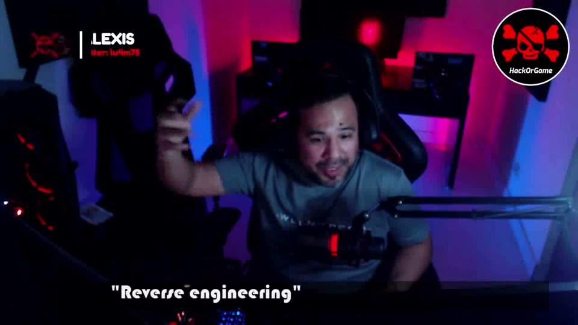
no sé, pues, que están, este, en Asia, de repente, Europa, que también hablan, este, este lenguaje que nos permite comunicar a todos, un saludo, no sé cómo llegaron acá, pero están acá, y simplemente pasemos una buena noche, muy bien, entonces, ya, para ir con nuestro invitado, ya, este, y, digamos, ya ir con el contenido de este, de esta entrevista que tenemos con Ricardo, ya, que es un gran maestro en este campo de acá, ya, estamos conversando, la verdad que, me he quedado para ir a Ricardo, ya, estamos hablando de algunas cosas interesantes, previas, que, que creo que también son cosas importantes de la vida, ya, este, ya, Ricardo, te voy a pasar ya con el directo en este momento, ya, y vamos con él de frente, muy bien, chicos, ahí vamos, listo. Buenas noches, Ricardo, ¿qué tal estás tú? ¿Qué tal? Buenas noches a todos, espero que, que estén bien, y, bueno, vamos a tratar de pasarla bien, y, y de charlar un rato, a ver qué. Estamos hablando al inicio, ¿no?, de qué injusta es la vida, muchas cosas, ¿no? Son cosas que digo yo, a veces digo cada pavada, mis compañeros se ríen en el trabajo, digo, de la injusticia de la vida, porque estábamos hablando, esos chistes que hago yo, que siempre digo, no es para que se enoje ningún, la persona creyente, pero en chiste digo que, que Dios se podía haber tomado siete días más, o unos cuantos días más, que un tipo que vive toda la eternidad, se tomó solo siete días para ser el ser humano, y, y cuando llegás a mi edad, te duele la espalda, te duele acá, te duele allá, o las comidas ricas son las que hacen mal, y las comidas feas son las que hacen bien, tomate unos días más, qué sé yo, hacerle un mes, dos meses, total, que si puedo vivir millones de años, siete días no es nada, o sea, tomate un poquito más y hacelo bien las cosas. Sí, una sola cosa para disfrutar de la vida, no lo de pie nomás, una rica cosa, dame una cosa rica que no, que me haga bien, yo, pizza, no sé, la que vos deslizas, pero una, una rica que me haga bien, que no tenga que estar comiendo la, cada tanto, qué sé yo, esas cosas, esas pavadas que digo yo. Dice Ricardo, vamos con las preguntas de fondo y de público, también espero que se caliente un poco y también me ayuden, digamos, a conducir el programa, porque saben muy bien que ustedes son parte de todo esto, de veras, este, lógicamente tengo un esquema, digamos, de preguntas que se realizan clásicas, pero me gustaría que también ustedes, chicos, sean parte de esto y nos ayuden, digamos, a incrementar, básicamente, nuestros conocimientos, a diversificar las preguntas, también, que son importantes de ustedes, ya. Muy bien, la primera, maestro, ¿cuánto tiempo tienes en esto? O sea, ¿ya cuántos años estamos hablando dedicado en este mundo? Yo empecé a mediados de los 90, 90 y pico, más o menos,
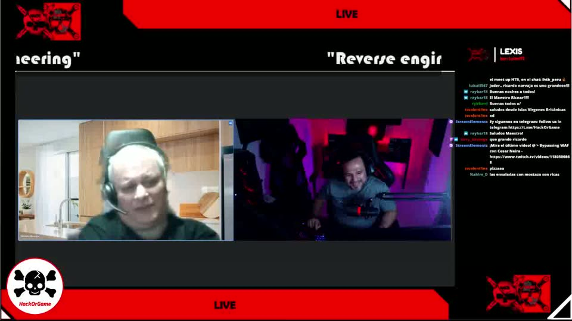
era, trabajaba arreglando ascensores, nada que ver, yo no. Esto es lo que te iba a preguntar, o sea, ¿y cuáles fueron tus inicios? O sea, ya, perfecto, tú le regalas ascensores antes, estamos hablando de que año, que año estamos hablando más o menos. Yo regalaba ascensores y cuando llegaba, como le estaba comentando a él, que bueno, a diferencia de horas que trabajo en Explo y en Reverse y todas esas cosas, cuando llegaba a mi casa, con el cerebro fresco, porque obviamente al trabajar en ascensores, por más que apretes tuerca, lo que quieras, es un trabajo manual, no es un trabajo que hay que pensar mucho. Entonces llegaba y me pasaba las tardes y las noches sin dormir, con la información que encontraba, que no era mucha, pero bueno, en esa época era muy contada. Y bueno, me pasaba las noches con eso. En cambio ahora, como me pagan y tengo mi trabajo, me paso el día haciendo eso. Entonces a la noche llego cansado y entonces por ahí es otra cosa, ¿no? Pero bueno, está bueno, está bueno, está bueno, una cosita que a mí me gusta decir siempre es que eso fue mi hobby, yo lo empecé a aprender por hobby. Y después terminar trabajando de lo que a uno le gusta y lo que realmente es el hobby de uno, es una de las mejores cosas que hay. Eso es lo que quería preguntarte, o sea, ¿cuál fue el punto de Quiere para decir, ¿sabes qué? Perfecto, no tengo mi trabajo, pero voy a agarrar y no sé, voy a reversar algo. O sea, ¿qué fue lo que pasó? O sea, hubo un momento que tú conociste a alguien, o sea, que de alguna forma te impulsó a una comunidad, que te impulsó, estamos hablando de los 90, a ver, comenta un poco de la historia básicamente, ¿cómo fue el qué? Fue algo gradual. Fue algo gradual. Todo empezó, todo empezó en la media de los 90, yo tenía una computadora Comodo 64, que era la computadora para jugar, los jueguitos, esas cosas. Y era muy fanático de los jueguitos en esa época, estamos hablando de la época de la Comodo 64, 90 y pico. Y entonces, jugaba mucho y bueno, iba a comprar los juegos, al principio eran con cassette, los juegos con data set, y después empezaron a venir con disquetes. Los tipos de Atari, ¿no? Claro, era como un cassette de música, vos lo ponías y tenías que apretar play, y entonces se cargaba y tardaba. Y después empezaron a venir con disquetes. Y entonces lo que pasó fue que yo me compré un cartucho que había, yo leía las revistas que venían, Micromanía, las revistas que había en esa época, y me compré un cartucho que se llamaba The Final Cartridge 3, que era un cartucho que era, lo chupabas en la computadora y tenía un botón, que vos en el medio del juego, del programa que estabas, entrabas y era como una especie de mundo nuevo,
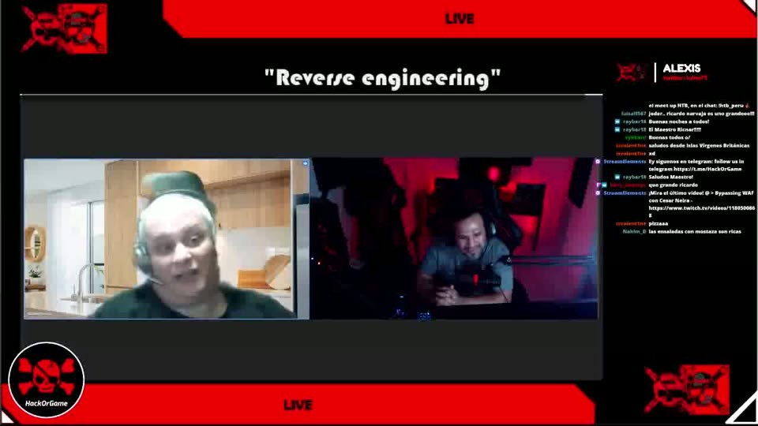
en el cual veías Assembler, veías el código del procesador, veías un editor hexadecimal, podías cambiar direcciones de memoria, podías confiar. Y empecé a meter la mano ahí, entonces empecé a decir, bueno, vamos a ver qué podemos hacer con los juegos. Empecé a cambiarle, a darle vidas infinitas, a poner bombas infinitas en los juegos, esas pavadas. Con eso fue los primeros pasitos. Y después de ahí, más adelante, uno de los pasos siguientes que pasó fue que los juegos, bueno, éramos todos pobres, pobres más o menos, digamos, no tenía mucha plata. Entonces los juegos, yo iba a la tienda y compraba un montón de juegos así, una vez por semana, dame todo lo que hay, compraba. Y, claro, salía. Y todos mis amigos también, no tenían un peso, éramos todos medio ratas. Entonces, lo que hacía, empezaron a venir los juegos, nos copiábamos los juegos unos a otros, obviamente, porque no teníamos plata. Pero después le empezaron a poner anticopia a los juegos. Entonces, más adelante, cuando empezó a salir la anticopia de los juegos, yo dije, no, ¿cómo vamos? No se podían copiar, o sea, que cada uno tenía que pagar su propio juego, era una cosa que no teníamos plata. Entonces, dije, bueno, voy a empezar a mirar, a ver cómo se puede hacer para vencer eso. Y empecé a vencer la anticopia y, claro, después me traían juegos así, sacarle la anticopia a esto. O sea, me traían así, pilas de juegos para sacar la anticopia. Me habían hecho como el tipo, el tipo desde que sacaba la anticopia. Entonces, todos me traían y yo lo hacía. Y eso fue lo primero, con los jueguitos de la anticopia. Después, con el tiempo, pasó el tiempo. Después compré una cómoda de la amiga, que era mucho más, digamos, los juegos eran espectaculares con respecto a los de la cómoda. Mucho mejores que los de la PC en un inicio, porque la PC al principio era bastante lamentable, los juegos. Después fue mejorando con el tiempo. Y entonces, lo que pasó fue que, cuando componé la PC, le empecé a dejar de perder un poco el gusto a los juegos y empecé a leer cosas sobre cracking. Algunas, el curso otoñal de craqueo, de Mr. Noboy, que salió por los noventa y pico. También las páginas de Whisky con Tequila. Me empezaba a interesar. Y eso me hizo empezar a mirar que podía empezar a ver cómo desproteger programas. Y entonces, con los ejemplos que ahí había, dije, bueno, a ver cómo se podía. Y empecé a meter la mano. Y poco a poquito empecé a desproteger programas. Y agarraba otro. Y me quedaba de noche. Y después agarraba otro. Y me empezó a gustar. O sea, lo que era la parte lúdica mía, la cambié. Los juegos por el crack. Que originalmente era crack. Es interesante.
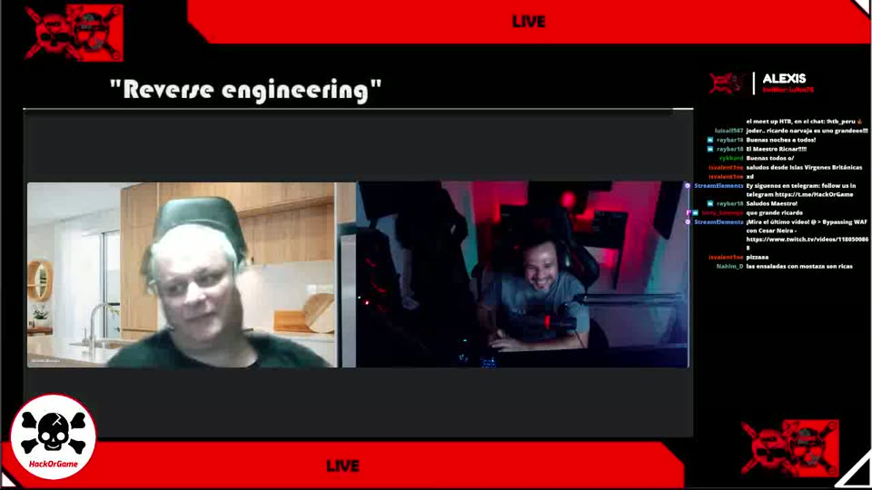
O sea, ¿y en esos momentos tú te acuerdas de qué tipo de protección tenían? O sea, ¿qué es lo que de alguna forma evitaba, por ejemplo, que se copieran los juegos que tenían? O sea, yo veo que todo sube por una necesidad de jugar. Así es simple. Bueno, en su momento lo sabía. Pasaron muchos años, pero no me acuerdo cómo era. Pero me acuerdo, sí, que lo hacían. Era fácil, o sea, era... Era fácil. No era tan difícil, era para empezar. ¿Y en qué te vas a... Pero bueno, había que meter un poco la mano, ¿no es cierto? ¿Y qué es lo que hacía? O sea, ¿cómo es que tú agarrabas? O sea, voy a cometer una frase medio indonante con lo que voy a decir yo. O sea, ¿cómo decompilabas, o sea, o cómo reverseabas, digamos, esa aplicación? Con ese cartucho. En la Commodore con ese cartucho. Ese cartucho tenía desensamblador, tenía todo. Era como una especie de herramienta de cracking. Tenía dumpiador, tenía todo. O sea, que vos podías agarrar, por ejemplo, me acuerdo de una de las cosas que pasaba. Generalmente vos tenías el juego, y el juego, las protecciones estaban al inicio, al principio de todo. Entonces vos lo cargabas el juego, pasabas la parte esa, que tenía toda la protección. Apretabas el botón, que congelaba la máquina, era como una especie de softizer, que lo conoce, pero con un botón. Entrabas ahí, y entonces en ese momento, como la memoria no era mucha, dumpiabas la memoria, ¿no es cierto? Y entonces el juego arrancaba desde ahí, desde donde vos lo dumpiabas. No había IAT, no había protección. Entonces vos lo dumpiabas y copiabas ese archivo en el mismo disque que tenías, y arrancabas de ahí. O sea, que arrancabas salteando toda la protección que tenía antes. Entonces lo único que tenía que hacer era frisearlo, dumpiarlo, copiar el archivo. En los primeros momentos era así. Después, creo que fue evolucionando, y no sé. Ahora, en esos tiempos, era un tema muy tabú, o sea, ese tema. O sea, hacer ese tipo, digamos, de cracking, o ese tipo, digamos, de reversing, ¿era un tema muy tabú? O tú veías que mucha gente también lo hacía, o sea, o era algo que... No sé si mucha gente lo hacía. Yo lo hacía. No sé si mucha gente lo hacía. Mis amigos no lo hacían, o sea, les gustaba que yo lo haga. Me traían los huevos y lo hacían a hacerlo vos. No se ponían ellos a hacerlo. No tenía mucha gente con que compartir en ese momento el mismo. O sea, en ese momento no había tantas comunidades como las que ahora hay. No, no había nada. Al principio, cuando estábamos hablando de la época de la cómoda. En los principios de los noventa. En los noventa y pico, antes de cuando yo empecé. Porque yo digo, empecé en los noventa, cuando empecé en el cracking. Con Chaco empecé y todo eso. Pero antes, la época de la cómoda es anterior a eso.
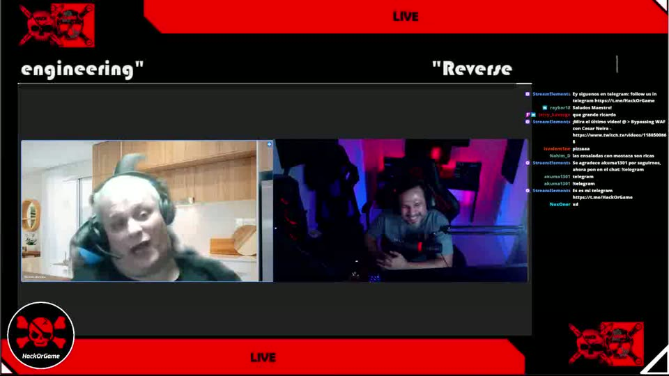
Es el principio de los noventa. Entonces, esa época no había nada. Era como, nada. Los juegos los compraban, los revistas que había. Y no había nada. No había internet. No sé, al principio no había nada. Después sí, en la PC sí, internet, el modem, todas esas cosas. Pero al principio no. Era para jugar nada más. Era una cosa que vos comprabas el jueguito, lo ponías. Y hablando de uno de los jugadores que tanto mencionamos, hay tan nox también que te mando un saludo por ahí. No, ¿qué tal? Sí, es un referente también. A ver si viene a comer pizza a la cuarteta, que estamos ya volviendo. El otro día fuimos. Y no estaba él, no estaba, no pudo ir. Ahora él, dentro de, ya tenemos la fecha, la próxima creo que es el segundo sábado de noviembre o así. Perfecto. El segundo viernes, perdón, porque el primer viernes está la ecoparty. Entonces después el otro viernes, creo que es el 10 o algo así. Creo que es la fecha. Perfecto. Ya, a ver. Vamos a temas ya un poco más, digamos, culturales para que la gente un poco entienda. Porque se ha hablado, ahorita hemos hablado de varios términos. O sea, hemos hablado, yo he mencionado un término, vamos a reversing, vamos a hablar de cracking. Hemos hablado por ahí también de lo que era la parte de compilación. Ya, a ver, existen muchos términos. Sinceramente a veces nos equivocamos a usarlos, ¿ya? Pero, ¿qué es la ingeniería reversa? O sea, ¿y qué ramas atrás de ellas? O sea, ya con toda tu experiencia, Ricardo, ¿qué ramas para ti ya, digamos, disciplinas crecieron a través de lo que es el reversing? Bueno, la ingeniería inversa primero tiene una definición genérica que es más allá de la informática, porque existió mucho antes de la informática. La ingeniería inversa, aún sin nombre, una ciencia que no tenía nombre, existe desde la época de los egipcios. Se lo digo. Y no había computación ni nada, porque la ingeniería inversa en sí es desarmar algún aparato, sobre todo en las guerras. Cuando había guerras, te caía algún arma de algún enemigo y vos decías, ¿y esto cómo lo hizo? Yo quiero hacer una igual, y tenías una, que es la que agarraste. Entonces, tenías que agarrar, desarmarla, estudiarla, ver cómo estaba, con qué estaba hecho, ¿no es cierto? Y tratar de hacer una igual y, si es posible, mejorarla en el proceso. Y eso era la ingeniería inversa original, ¿no es cierto? Sobre todo en la época bélica, en los conflictos bélicos. En la Segunda Guerra Mundial ni hablemos. Ingeniería inversa full. Ahí se le puso el nombre de ingeniería inversa. Y después aplicado al software, por supuesto, el software, o sea, la ingeniería inversa es lo opuesto a la ingeniería directa.
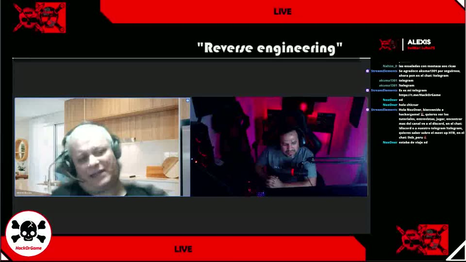
La ingeniería directa es la ingeniería normal. Yo cuando diseño algo, ¿qué hago? Un plano, un plan de trabajo, y desde el plano voy construyendo y llego al final. La ingeniería inversa es desde el producto construido, tratar de obtener el plano o la fórmula, o el código fuente, desde el código ya compilado. O sea, ir de atrás hacia adelante. Del código compilado, sin el código fuente, tratar de obtener el código fuente, o alguna parte del código fuente, o entender cómo funciona, o tratar de interpretar qué es lo que hace el programa compilado, que por supuesto no es lo mismo que tener el código fuente. Perfecto. Y ahora, o sea, a ver, ya cuando tú me afirmas algo que yo también estaba leyendo, y aquí entiendo mejor básicamente el concepto de lo que es la parte de reversí, existe para hardware, existe para software, o sea, por igual creo que eso ya está más que claro con lo que tú has definido. ¿Y en qué se diferencia con la decompilación? O sea, ¿cuál es la, digamos, tiene, es, digamos, parte del reversí? O sea, no sé. Y lo que pasa es que la decompilación, sí, bueno, el compilador es el que transforma el código fuente en el código que entiende el procesador, ¿no es cierto? Eso es el compilador. Y el decompilador trata de hacer lo inverso. Por supuesto, cuando nosotros empezamos no existían decompiladores, existían los desensambladores, sí, porque desensambla, digamos, en código Assembler, las instrucciones del procesador, sí, eso siempre existió. Pero el decompilador es algo más automático. Normalmente, si vos agarrás un programa compilado, si está hecho en C, C++, o en Assembler, o lo que sea, el código fuente original, la decompilación automática nunca te va a dar un programa funcional, te va a dar un programa, una idea de más o menos cómo es la cosa. No va a funcionar. Bueno, vos podés agarrar un programa compilado y decompilarlo, y tiene que ser muy sencillo para después poder volverlo a compilar y que vuelva a funcionar. Realmente eso no, no, te da una idea, sí, más o menos de cómo es, cómo son las cosas, pero normalmente no se llega a poder volverlo a compilar. Pero bueno, es una ayuda para los que somos rey y hacemos ingeniería inversa, por ejemplo, Ida o Gidra, o los que tienen decompiladores ahora, los programas que tienen son desensambladores, pero también tienen como decompiladores, y bueno, uno con eso también se ayuda, mal no viene. Y ahora, tómese un término más, que es el desamblar. O sea, el desensamblar es agarrar los opcodes, que son directamente la Mac, y el procesador entiende números, digamos, números binarios,
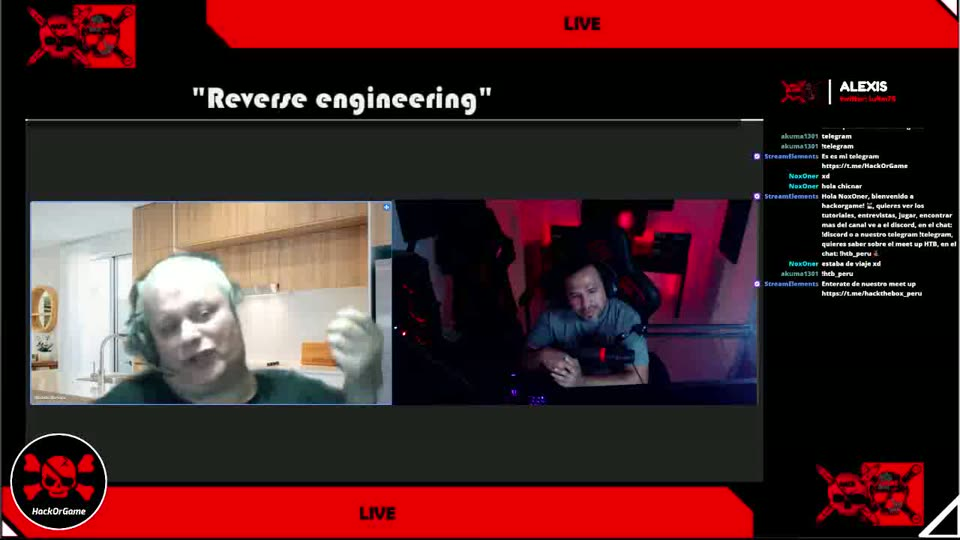
que uno en el desensamblador los ve como números hexadecimales, pero en realidad son ceros y unos, el procesador trabaja todo con ceros y unos binarios. Y eso los agrupamos en opcodes hexadecimales, y esos opcodes se transforman desensamblándolo en las instrucciones de Assembler, que más o menos uno las puede entender por lo menos mucho más, que si uno te dice, ¿qué hace el procesador? 0, 1, 0, 0, 0, 1, 1, no sabes nada. En cambio, otra cosa es que digas move, AX, coma, RX, move, pop, push. Las instrucciones en Assembler te dan una idea más o menos de lo que está el programa haciendo, aún sin ser el código fuente, ¿no es cierto? Obviamente. Claro, exactamente. Y a ver, y hablemos de, obviamente, del primer término, de la parte de reversing. O sea, ya con los años se desarrollaron ramas a partir de lo que hace la ingeniería reversa, o sea, no sé, ¿qué puede ser? No se me ocurre este nombre de ensenamiento, o sea... Cracking, cracking, exploiting, malware, análisis de malware. Ah, básicamente, o sea... Todas esas son su rama del ingeniería inversa. Eso es a nivel de software, a nivel de hardware. Y a nivel de hardware, bueno, yo no trabajo con hardware, trabajo con software, pero bueno, a nivel de hardware también, o sea, a nivel de hardware mucho... También hay como eso que... Yo no lo sé, no soy muy experto con esas cosas, pero que a los chips los van limando para ver qué va pasando y van tratando de averiguar los chips que son secretos, los chips de la Playstation, no sé, o de ciertas... Que son una caja cerrada y no saben lo que son, lo van limando y viendo qué es lo que pasa, y viendo, tratando de ir encontrando... Yo no sé bien cómo se hace eso, porque no es mi especialidad el hardware, pero sé que hay ese tipo de cosas, ¿no es cierto? Y bueno, en el hardware también hay espionaje, todas esas cosas son parte también de... O sea, de tratar de ver qué es lo que hace el enemigo, o la empresa rival, y bueno, tratar de encontrar la forma de obtener la tecnología que tiene el otro, o de mejorarla. Porque el reversing se usa para muchas cosas. Hay veces que uno dice, es todo ilícito. No, no es todo ilícito. A veces, por ejemplo, una empresa compró un programa, y tiene todas sus máquinas, 300 máquinas con ese programa. Lo compró hace 20 años. Resulta que el tipo que lo hizo, quebró.
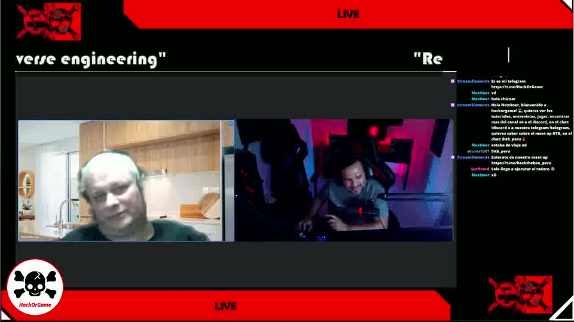
No funciona más. Mientras, si los sistemas se van avanzando, existe XP, después Windows XP, Windows 10, Windows 7, y el tipo lo tiene solamente su versión original. Y entonces, él no quiere comprar otro, porque ese programa es el que le sirve justo, y el que funciona, el que lo tiene ahí. ¿Qué opciones tiene? O mantenerse en un sistema viejo, que tiene un montón de vulnerabilidades, y que algunos lo hacen. Y otra es tratar de ver si lo puede reversear para tratar de comprender cómo funciona y adaptarlo para las nuevas versiones de Windows, o modificarlo. A veces pasa que, por ejemplo, con el reverse de partes, de partes, por ejemplo, vos compraste un aparato, y el tipo desapareció, no te da más mantenimiento, y vos ves que sirve, pero por ahí tiene algún defecto. Ponele que alguna pieza se rompe mucho. Entonces, tratás de estudiar cómo se fabricó para ver si podés hacer alguna modificación para que esa pieza original la reemplaces por una mejorada. Entonces, el reverse también incluye mejoras, mejoras en el programa original, actualización, temas de licencias. O sea, vos podés verificar si alguna persona, por ejemplo, vos tenés un programa, y la empresa de la competencia tuya saca un programa parecido. Entonces, van a la justicia, porque vos decísme esto y me copió. Y vos vas a tener que tener alguien que haga reversing del programa de ellos para ver si te copió tu código. Y eso lo vas a tener que hacer mediante reversing. Entonces, todas esas cosas son, hay muchas cosas. O sea, bueno, malware, cracking, esos ya son más, digamos, análisis de malware, análisis de cracking, o exploiting, bueno, todo lo que es exploiting. No sé, la mayoría conoce lo que es. No sé si explicar los términos. Sí, vamos por partes, vamos por partes para más o menos ahondar en temas actuales. Ya, a ver, llegamos ya con los años ya que, digamos, de labor que vienes teniendo en este campo, ¿no? Y ya has visto evolucionar en el mundo de la tecnología, ya hablamos de la tecnología, desde el unicero prácticamente, ¿ya? Actualmente, ¿cuántos elementos de ayuda si alguien quiere dedicarse tiene? O sea, ¿cómo que, de alguna forma tú has visto que estas herramientas, estas tools, o sea, han evolucionado también en el paso de los años? Y también, ¿cuántas fuentes de aprendizaje se tienen actualmente? O sea, para alguien que quiera aprender, ¿tú qué le recomendarías? ¿Dónde estudiar? Ya contigo. Ya digo, muy punto.
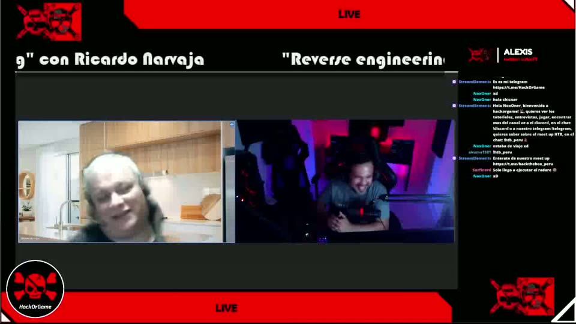
Perfecto. Pero vamos a las tools, por ejemplo, ¿no? O sea, este, ¿qué tools para ti son? O sea, alguien que tiene que, de alguna forma, hacerlo, o sea, entenderlo al revés de derecho. O sea, ¿sabes qué? Yo lo que quiero decir es una comparación entre cómo nosotros empezamos de la época, no es porque voy a decir todo el tiempo pasado fue mejor este viejo, ¿no? Y cómo son distintas épocas de las épocas que nosotros empezamos con la época actual para que vean que hay cosas que a nosotros, a pesar de que uno dice eran malas, o por ahí eran malas con respecto a la época actual, quizás a nosotros lateralmente nos ayudaron. Por ejemplo, vamos a decir ejemplos. Ahora, yo veo, porque yo empecé en los 90 y pico, pero los chicos que estudian con nosotros, los cursos, todo veo la gente, las preguntas que hace, las dudas que tiene, y veo cuál es el problema que tiene. Creo que uno de los problemas más grandes que hay es que nosotros, cuando empezamos, nos quejábamos de que no había casi información. Y ahora hay una cantidad de información que abruma. O sea, ahora no saben por dónde empezar. Nosotros no teníamos elección, era lo único que había. O sea, eso no era bueno no tener información, pero, digamos, lo poquito que encontramos era lo único que había. Así que había que empezar por ahí porque no había elección. En cambio, ahora hay tantas cosas por ahí que la gente le cuesta decidir por dónde empezar. Ese es uno de los problemas. Otro de los problemas es que a nosotros la dificultad nos hizo persistentes. Las dificultades y las cosas que no se encontraban nos hizo ser persistentes. La mayoría de los que empezamos en las épocas viejas somos muy persistentes. Yo siempre digo una frase que muchos dicen, qué frase de fea que es. Pero a mí me gusta. Yo cuando hago algo y me pongo, o sangra el programa o sangro yo. Alguien tiene que sangrar, pero así nomás no se va a ir tan alegre sin que yo le ponga la mano encima y le haga algo. O sea, como que la cosa es a muerte. No va a ser tan sencillo que se vaya caminando así sin que yo le meta la mano. Y eso es persistencia. A veces eso implica meses, implica cinco minutos. Y muchas veces la gente de ahora lo que tiene es que está muy acostumbrada a que todo se consigue rápido. Como está todo, vos vas a Google, aparece acá, aparece allá, qué sé yo. Y entonces lo que no se consigue muy rápido, muchos dicen, ah, bueno, pero si no se consigue, entonces qué sé yo. Entonces es como que lo dejan. O sea, no tienen, algunos sí, pero muchos no tienen esa persistencia de decir,
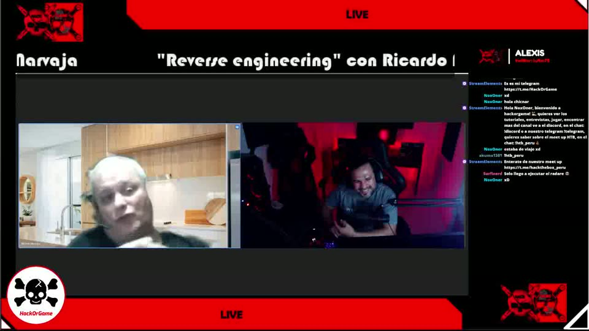
yo voy a seguir. Y si no puedo, esto es como cuando vos boxeás. Si vos boxeás, no podés boxear contra el campeón. Si agarré un programa que es muy difícil, y realmente yo no estoy al nivel, y bueno, intento, intento, intento. Y si no puedo, bueno, lo dejo en una carpetita ahí, y dentro de un año, cuando yo haya practicado, lo agarro, porque es como boxear contra el campeón al principio, me van a matar a palos, me van a meter piña por todos lados. Y en cambio, si yo primero peleo con uno más o menos fácil, después otro más o menos fácil, después sí peleo contra el campeón. Yo veo que mucha gente ahora viene directamente a decir, ¿cómo se hace hacer esto? Y van a, yo sé que eso es muy difícil lo que está preguntando, para gente muy experta. Y el tipo quiere empezar por ahí. Y no podés empezar, eso es pelear contra el campeón en la primera batalla. Vos tenés que empezar despacito. Y eso es lo que nos ayudó a nosotros también. Es que nosotros fuimos siguiendo como las cosas se fueron dificultando. O sea, cuando empezamos, las cosas eran más fáciles, después un poco más difíciles, un poco más difíciles. Y entonces, la escalera fue gradual. En cambio, el que encuentra ahora, encuentra todo mezclado. Cosas difíciles, cosas fáciles, cosas ultra difíciles. Y muchas veces quiere agarrar lo difícil de movida. Nosotros no teníamos lo difícil de movida, porque en esa época era todo fácil al principio. Entonces, sí o sí fuimos de a poquito. Y para ir, para aprender hay que ir de a poquito. Hay que hacer esa escalera, de a poco, con lo fácil, un poquito más, un poco más difícil, un poco más. Si vos vas a agarrar al campeón la primera vez, te puede asegurar que te va a sacar volando por arriba de la soga del ring. Y es así. Y yo veo eso también, que mucha gente está confundida y no se da cuenta que esto es gradual. Y hay que ir de a poco. Y qué mejor, que alguien que tiene tantos años en esto para de alguna forma dar esas pautas necesarias, para ayudarlo a direccionarse. Yo lo veo como el error de muchos que quieren ya. ¿Y cuánto me va a llevar a aprender eso? Mirá, esto lleva su tiempo. ¿Y cuánto? ¿Cuánto tiempo? Y si creen que en 5 minutos, esto no es una cosa. Tú estás en el 90, estamos en el 91. Aún te dije alguna cosa que no la sigas todavía tampoco dominando completamente. No, yo siempre digo que cuanto más aprendo, menos sé. Es la verdad de la cosa, Ricardo. Tienes mucha razón esto. Todo lo que tú dices tiene mucha razón. Y de veras, es algo que también es, creo que tener referencias como motivos importantes. Ya, pero ya, hablemos así. Claros, para alguien que quiere empezar, y digamos, no hablemos ahorita del aprendizaje, que bueno, lógicamente que tiene que, digamos,
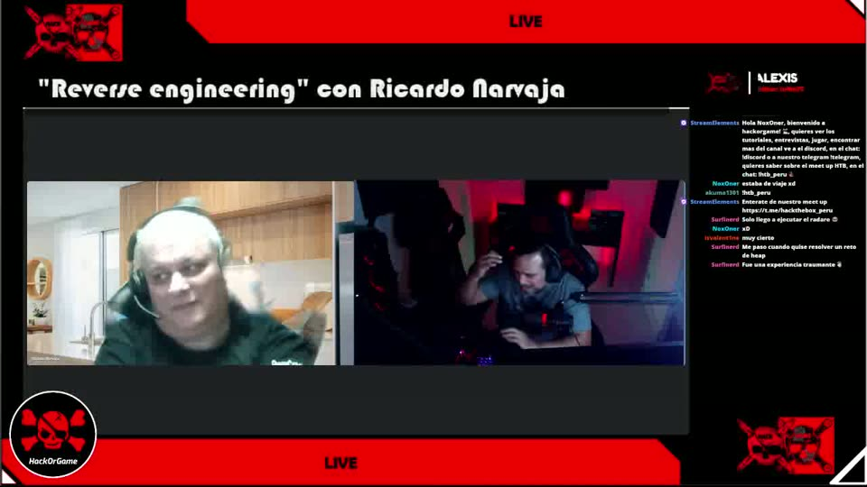
no sé, quemarse las pestañas para estudiar algunas cosas. No hablemos de eso, sino algunas herramientas que sí pueden ser útiles. O sea, algo que no sea el campeón, el campeón mundial, sino el peso, el peso ligero. Yo cuando empecé los primeros cursos, porque la mayoría del curso, uno de los primeros cursos que yo hice, que fue hecho en XP, fue el curso de Oli y de BG. Ese curso lo que tenía, que fue hecho en una época todavía más o menos fácil, con una herramienta que tiene una curva de aprendizaje suave, es fácil de aprender. Y entonces mucha gente agarró eso y empezó por ahí. Y empezó con eso porque tenía una curva suave. Y después con el tiempo, cuando ya dominaste eso, hay otras herramientas más profesionales, está el IDA, WinDBG, yo hablo de Windows, pero igual IDA funciona también en Linux, en Mac, en Android, pero bueno, en general yo hablo de Windows, que es donde yo trabajo, pero tenés IDA, tenés WinDBG, tenés Seguidra, Hora, Radares, todas estas herramientas, pero son, tienen una curva de aprendizaje que es difícil empezar por ellas, es difícil empezar por IDA. Si antes no viste algo más sencillo como OliDBG, o X64DBG, herramientas que son un poquito más sencillas. Entonces, yo muchas veces lo que le aconsejo a los que empiezan, le digo, ¿vos hiciste algo alguna vez de esto? Si me dice que ya hizo algo, qué sé yo, por ahí le aconsejo que vaya directo al curso de IDA, o al curso de reversis que está en YouTube, que empieza con X64, después sigue con IDA. Pero si no tiene nada de experiencia, le digo, mirá, lo mejor es que podés hacer, agarrate y ponete una máquina virtual con XP, y agarrate y hacete el curso de Oli. Porque eso es la base de lo que es hoy día, y eso va a ir despacito, y lo vas a ir aprendiendo de la misma forma que aprendí yo, porque así empecé yo con eso. Entonces vas a ir subiendo la escalera de espacio, porque si vos subís la escalera, querés subir al peldaño de arriba directo, te vas a caer rápidamente. Entonces, eso es uno de los consejos al que no sabe nada, que agarre los cursos viejos, sobre todo del XP para adelante, de Oli, los cursos viejos, porque eso hace que se te abra la mente, y como es sencillo, empieces como medio gradualmente, y después cuando terminas ese, sí, agarrate el de Ida, y entonces te vas haciendo más profesional, Ida es más profesional, obviamente. Hoy yo en el trabajo no uso, uso Ida, WinDBG,
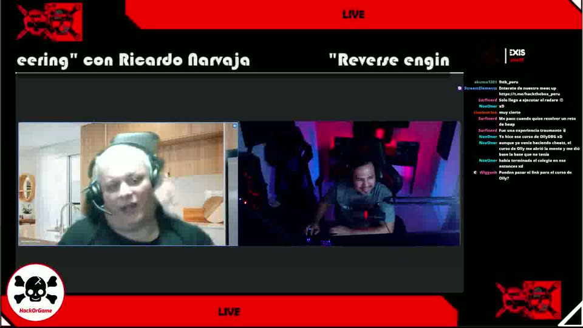
son herramientas más profesionales, o sea, es así. Bueno, por ahí está que me dice que les pase el link para el curso de Oli, ya pegué. Hay que usar. Hay que usar. RicardoNalbaja.info Ahí está. Si después de entrar en RicardoNalbaja.info pueden zafar todas las boludeces de Google que dicen no hay virus, esas boludeces que son estupideces porque no hay ningún virus. Bueno, una vez que sacan la protección de páginas, que se yo, ahí están todos los cursos, están los de videos, están los cursos de Google. RicardoNalbaja.info Ahí lo estoy compartiendo Valentín. No les digan a Google que no tiene virus, es mentira, ellos son un virus. Perfecto, perfecto, muchas gracias Ricardo. A ver, vamos a otra pregunta, y justamente tú has tocado un tema de trasfondo, el tema del copyright, ¿qué pasa con el copyright? Realmente existe tanta libertad para realizar este tipo de trabajo, ¿qué tan regulado está? O sea, si hablamos por ejemplo de Argentina, ¿existe regulación al respecto? Si hablamos, no sé, del extranjero, ¿y porque se me viene a la mente por lo que pasó por ejemplo con este chico, Yo Hop, bueno, ese caso emblemático, justamente contra la Sony, que tuvo un problema, y se metió inclusive, me parece este anónimo, y todo terminó en un... Lo que pasa es que todo depende qué tema movás, si vos por ejemplo, o sea, por ejemplo, yo empecé con cracking, cracking significa desproteger programas, lo hacías por hobby, no los vendía, ¿no es cierto? Depende de la legislación de qué país estés, por ejemplo, acá en la Argentina, si vos no vendés lo que estás craqueando y lo hacés por tu propio gusto, enseñar, o lo que sea, digamos, o porque te da ganas de hacerlo, es muy raro que alguien se entere, porque se van a enterar cuando vos vayas a una página web y digas, te vendo el programa tal, que no lo hice yo, que lo hizo Juan Pérez, se lo craqueé y te lo estoy vendiendo, entonces los tipos van a entrar ahí y te van a llegar hasta vos, pero como vos no vendés ni nada y solamente enseñás, es un poco, no digo que no puedan haber, tenemos, hemos tenido algunos que otros abogados por ahí dando vueltas, pero en general es más difícil, el hacking, el hecho de penetrar en la máquina de otro, es otra cosa, eso está mucho más, digamos, mucho más condenado, o sea, si te ven que vos entraste, tocaste, hiciste daño o algo y te llegan hasta vos, bueno, tenés que tener más cuidado porque eso está más, más condenado por la ley, pero el, el crack y como vos estás en tu propia máquina trabajando ahí
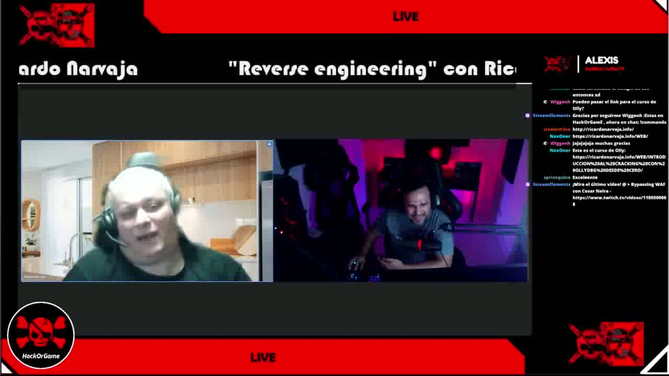
y estás haciendo, es muy difícil que salga de ahí, o sea, si haces un tutorial, por ahí una vez nos pasó que yo estaba trabajando en Corco, bueno, en la empresa que trabajo y me llamaron por teléfono y decían, che, hay un abogado ahí, y dice, y dice, ¿qué pasa? sí, no, te voy a hacer juicio porque hay un tutorial del programa nuestro, era una empresa argentina, que no lo había hecho yo encima, lo había hecho otro compañero de crack latino, dice, lo tenés que sacar, le digo, porque si no, le digo, mirá, le digo, yo no estoy vendiendo nada, es un tutorial para enseñar reversing, así que, ¿qué delito es? explícame el número del delito, todo, mi viejo es abogado, le digo, dame el número que yo lo consulto con él, qué delito, qué es lo que estoy haciendo, de qué número delito es, o sea, de enseñar, o sea, qué parte, qué ley es la que estoy quebrantando, no, porque el tipo al final, primero me vino todo agresivo, después medio se ablandó, me dice, no, dice, ¿sabes lo que pasa? es que si la gente se baja tu tutorial y estamos perdiendo venta, dice, por favor, primero vino malo, y después vino medio como por favor, bueno, me dio pena, le digo, bueno, está bien, le digo, qué sé yo, lo vamos a sacar, entonces lo sacamos, lo sacamos porque el tipo al final lo pidió, medio así, casi se pone a llorar, pobre, entonces digo, bueno, está bien, lo vamos a sacar, y lo sacamos, pero, en general, la mayoría de los programadores, los tutoriales de cracking, muchas veces les sirven, porque, como yo no vendo nada, el tipo hace una protección, y yo se la venzo, entonces el tipo ve como yo se la vencí, lee mi tutorial y la puede mejorar, y entonces va mejorando la cosa, y mejora su propia protección, si nadie, si yo no se la venzo, va a haber algún otro que se la va a vencer, y lo va a vender, entonces más vale que se la venza a alguien que no lo está vendiendo, ¿no es cierto? Porque así puede mejorar sin necesidad, gratis prácticamente, está mejorando con nuestra colaboración gratuita. perfecto, si, si, si, es entendible, y es lo que tú mencionas a los chicos, o sea, este, el tema del copyright, mientras lo hagas internamente, mientras quizás lo reportes, por ahí, y si lo reportas también, o sea, ojo que no lo reportas públicamente, sino, o sea, hacia, digamos, la empresa afectada, o lo que sea, o sea, ¿está bien válido eso, o cómo ves ese asunto? o sea, o sea, o sea, vos estás hablando de vulnerabilidad, o sea, no sé, pero tú mencionaste, ¿sabes qué? Has logrado, digamos, crackear, y ya estás a vencer, no sé, este, tal, tal, este, tal cosa que no te permitía, digamos, tener licencia, o algo similar,
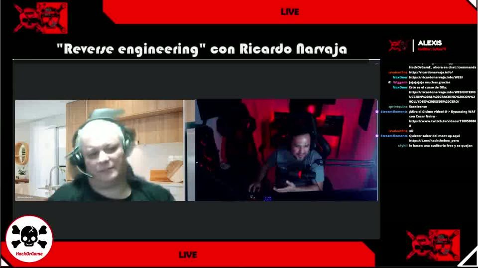
ya, entonces, eso se puede, digamos, hablar con, con este, digamos, con la empresa afectada, o no, o sea, nosotros no tenemos esa costumbre a hablar con el autor, no tenemos esa costumbre, porque hubo algunos que quisieron hacer eso, y los tipos se enojaron, y, mirá, yo te estoy diciendo cómo te lo van a vencer, para que lo mejore, no, pero el tipo se enojó, en general no tenemos ese, pero si ponemos el tutorial ahí, el tipo si lo programó, puede agarrar, leerlo, y mejorarlo, solamente leyendo el tutorial, así que, el tipo que se hizo el programa, que se llama, no sé, venta de chorizo, se llama el programa, entonces el tipo busca, venta de chorizo en internet, y ve que está mi tutorial, entonces agárralo, bájalo, lees, y enseguida se da cuenta, por donde lo puede mejorar, tratando de evitar, lo que yo estoy mostrando ahí. Perfecto, sí, sí se entiende, ya, entonces eso queda un poco más claro, para los chicos, que quieren de alguna forma, experimentar con esto, ya, y tener un poco las cosas claras, básicamente, qué pueden hacer, y qué no pueden hacer, ya, entonces, este, me molesta por ahí, pero bueno, ya está, a ver, otra pregunta, ya, este, últimamente, digamos, este, en desarrollo, digamos, de aplicaciones, sea móvil, es Figo Application, Plays, ¿no?, en general, yo he visto que ya, viene por defecto, muchas librerías, en el cual, este, ya hacen infusación, ya, o sea, ya está, digamos, este, ya por defecto, a ver, según tu experiencia, ya, este, y ya, el tiempo que tienes trabajando, ¿no?, qué recomendación, y qué herramientas, de alguna forma, pueden ser útiles, para tratar de, este, de tener el lenguaje, un poquito más claro, ya, un poco más, este, entendible, y no irse, pues, al outcode, no, a tratar de interpretarlo, no, o sea, no irse de repente, y pasar al ensambrador, no, para tratar de reconstruirlo, no, ¿existe eso, o siempre va a ser el camino, difícil, en ese aspecto? Y hay algunas herramientas, igual, generalmente, como yo, hace tiempo que estoy en la parte de exploiting, trabajamos con programas, con el sistema, con librerías, con el mismo Windows, con sistema, o programas de Microsoft, o de, generalmente, no están ofuscados esos programas, o sea, es muy raro que esos estén ofuscados, los que están ofuscados, por lo menos, en lo que yo veo, muchos son virus, o malware, están empacados, muchos ofuscados, programas así normales, hay algunos, pero, no se hace, no se ven tanto, digamos, digamos, hechos en CES, en Más Más, en Assembler, en Delfi, en, sí se ven mucho,
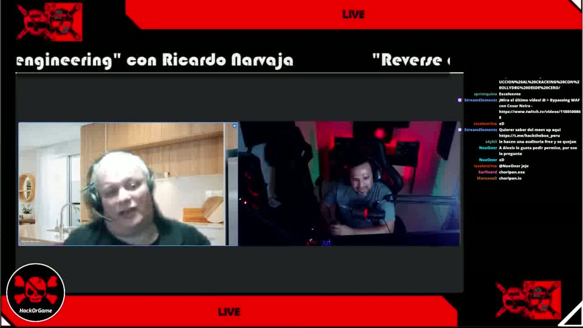
un poco más, como vos dijiste, en algún lenguaje de alto nivel, por ahí puede ser, pero, y bueno, todo, todo tiene su herramienta, y todo tiene su contraherramienta, con buscar un poquito, igual, en los cursos que tenemos nosotros, por ejemplo, el último este de, de reversing, que está ahí en los videos, en la página, hay algunos ejercicios, que nosotros hicimos teorías, y después hacemos juntadas, que hacíamos juntadas, que ahora interrumpimos un poco, para descansar, pero hacíamos juntadas todos los sábados, y poníamos ejercicios, y la gente los resolvía, y bueno, ahí está la resolución, que hizo la gente, está el código fuente, todo, los ejercicios, para que la gente practique, y hay varios, que se llaman, algunos se llaman choteado, otros más o menos, alguna variación de ese nombre, y esos tienen algunos, tienen ofuscaciones, digamos, el código, que yo lo, lo ofusqué yo, digamos, a mano, personalmente, y después explicamos, cómo desofuscarlo, manualmente, más que nada, para que se entienda, son cosas chicas, obviamente, si vos tenés que desofuscar, un programa gigante, está todo, todo enfocado, posiblemente tengas que hacer un script, o tengas que utilizar una tool, pero bueno, ahí se explica, la idea de cómo, hay que hacer, digamos, en ejemplos chicos, y después, bueno, eso lo tenés que amplificar, y aplicarlo para casos más grandes, o sea, perfecto, ¿cómo se puede unir, participar, no entendí esa pregunta, este, y yo digo, sí, ¿cómo se puede participar? Ahora, ahora justo acabamos de parar, o sea, en las juntadas estuvieron, casi todo el año pasado, y, un montón de meses, casi todos los sábados, y hace dos o tres sábados, dijimos, bueno, vamos a parar un poco, o sea, los videos de las juntadas están ahí, donde están, el canal es en YouTube, hay un, van a los playlists, y están los playlists de las teorías, los playlists de las juntadas, está todo ahí, está todo grabado, y tiene los códigos y todo, o sea, que el que quiere practicar, puede practicar con esos ejercicios, pero, no es que no vamos a volver con las juntadas, vamos a volver con las juntadas, pero, es como que tomamos un descansito, posiblemente, no sé, quizás. y que ahí quiero aprovechar la pregunta, este, ¿qué comunidades, además, bueno, Crack Latina es una de las comunidades más grandes, que realmente más conocidas, ¿qué otras comunidades, de repente a los chicos, les puede servir de ayuda, este, que, o bueno, en este caso, bueno, comunidad, vamos a ver comunidades que pueden ser de ayuda, para que los chicos empiecen, digamos, en este mundo, y encuentren también, fuera de la información precisa, si no, digamos, es un poco a veces complicado pedir esto, ¿ya? Porque se yo creo que existe mucho egocentrismo, digamos, en algunas personas,
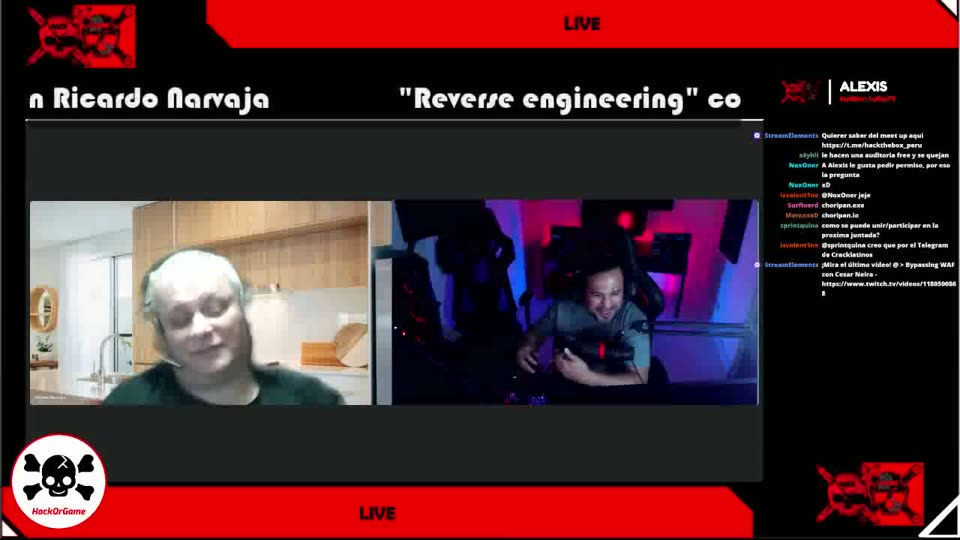
pero, más o menos tú, que conoces en el tiempo, o sea, y a Crack Latina podemos recomendarla, ¿otras más? La verdad, sinceramente, en español, hay algunas, que, que son, por ejemplo, derivados de Crack Latina, que salieron de ahí, está Perú Crack, hay varias, hay varios ahí, ya que estamos en Perú, eh, eh, vamos a hablar de, de gente, pero no sé, realmente, muchas, muchas, muchos de los grupos, no están en actividad, Crack Latina, en Telegram, sigue en actividad siempre, y, y hasta hace, desde el 2000, Crack Latina se empezó en el 2000, antes era una lista de correo, y, y ahora pasó más que nada Telegram, porque, nos parece más, como ese, más, eh, interactivo, y dentro de Crack Latina, hay un montón de subcanales, hay canales de Esploy, de Pentesting, de Malware, de, de, qué sé yo, de amigos, de amigos, de gente, por hablar así, de general, de, así, de muchos, muchos subcanales, ¿no es cierto?, que son subcanales de Crack Latina, y la gente va, y, bueno, y pregunta, charla, y a veces no, pero si sale alguna novedad, o sale algún tutorial, lo mandamos ahí, y si cuando hay, cuando había juntada, nos anunciábamos ahí, y cuando sale un nuevo curso, en este momento, yo estoy sin hacer ningún curso, digamos, de los gratuitos, estoy haciendo cursos, pero, de los otros, de los, de la Copa Art, y estuve haciendo training, Jack Academy, y todo eso, pero, en este momento, de los gratuitos, paré un poquito para descansar, porque estoy un poco, se ha agotado, entonces, cuando salen cursos y todo, también salen ahí, igual yo también los pongo en Twitter, los que me siguen en Twitter, también están, las cosas que van saliendo, pero bueno, se hace una linda comunidad, es una linda comunidad, que los latinos se hacen amigos, no sé, realmente el problema que había, que hubo con las comunidades, sobre todo las de Cracking, originalmente, cuando yo empecé, yo fui, cuando yo empecé, bueno, estaba aprendiendo, como todo el mundo, era un novato, nadie nació sabiendo, y todo el mundo aprende, y yo iba, a las comunidades que había, estamos hablando de hace, mil, el dos mil, no sé, un poquito antes, y, te trataban mal, cuando vos preguntabas, originalmente, las comunidades, te decían, ah, vos sos un lamer, porque mirá lo que preguntás, porque, como si, alguien hubiera nacido sabiendo, y nadie, nadie nació sabiendo, la idea, es, es, es aprender, lo que nosotros no aceptamos, en Crack Latinos,
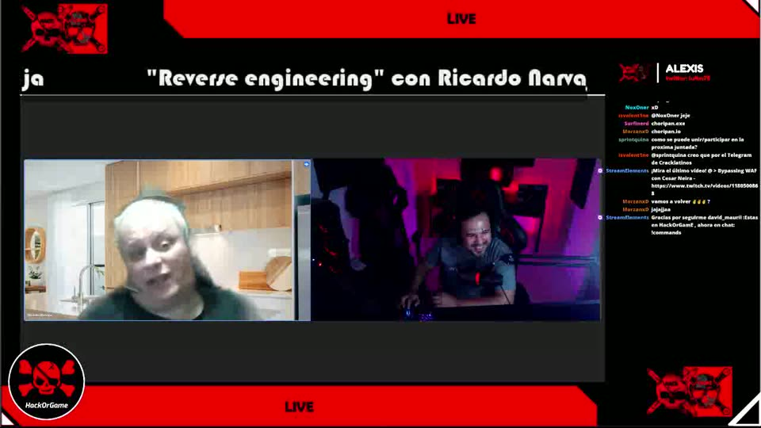
o sea, nosotros aceptamos, que una persona pregunte, pregunte lo que quiera, no hay preguntas tontas, no hay preguntas, pava, como nos decían nosotros, eh, sos un lamer, sos un tonto, no, porque nosotros también, empezamos aprendiendo de cero, y fuimos poquito a poquito, pero lo que en sí no aceptamos, es la gente que viene y dice, me hacen esto, me hacen esto, no, no, me hacemos nada, vos preguntás, nosotros te podemos decir, qué tutoriales vas a seguir, para hacerlo, o qué camino seguir, o qué ayuda a un team, para hacerlo, pero lo vas a hacer vos, yo no lo voy a hacer, vos lo vas a hacer, o sea, acá el tema, es que cada uno, tiene que hacer lo suyo, no que vengan a exigir, que nosotros le hagamos algo, eso no se acepta, la persona, que viene a pedir cosas, para que se lo hagan a los demás, no va, ahí, enseguida, sale con la patadita del spam, pum, ahora Ricardo, este, realmente tu tiempo, ya que tienes esto, realmente, la comunidad, digamos, fuera de las comunidades, digamos, latinas, cómo ves tú, digamos, la evolución en las comunidades, este, de habla inglés, o sea, qué comunidad tú por ahí, recomiendas, de repente, que a alguien, le guste buscar información, más en el idioma, justamente original, ya, este, digamos, de esta clase, digamos, de investigaciones, porque bueno, también supongo que debe tener, bastante investigación al respecto, alguna recomendación al respecto, para alguien que quiera buscar, información en inglés, bueno, en inglés hay, en inglés hay algunas cosas, hay, hay libros también, hay, hay muchas páginas, hay uno buscando en Google, con la ingeniería inversa, o el tema que quiere, hoy día es muy difícil, que, que alguien te pueda decir un link, porque vos lo buscas, y te salen, perolingas chorradas, por todos lados, o sea que, o sea, ponés ingeniería inversa, en YouTube hay videos, está plagado de cosas, el problema a veces que hay, es que, hay muchas cosas, entonces, a veces ese es el problema, que a veces cuesta, decidirse, para dónde empezar, pero bueno, a ver, hay, si uno busca en Google, le pone ingeniería inversa, cracking, hacking, malware, cursos de esto, del otro, es, es tan libre de encontrar, por ejemplo, cursos de, de, de, de cracking, cursos de exploiting, se fue, se fue el audio, este Ricardo, por si acaso, a ver, prueba nuevamente a Ricardo, por favor, está sin audio, a ver, a ver, un segundito, estamos con Ricardo, ya vamos a ver que,
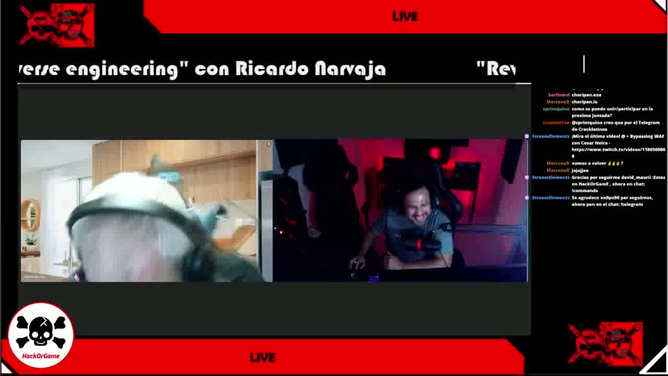
hay un problemita, con su audio, vamos a ir retratando, chicos, a ver, ustedes mismos también, si tienen algún tipo de consulta, ya, este, es el momento de, también consultar, este, aprovechar que estemos acá con Ricardo, el día de hoy, y también apoyándonos un poco, porque, este, como les comento, no, es un poco complicado, a la hora yo lo sé, para más que todos mis hermanos de Argentina, mis hermanos de Chile también, un poquito complicado, bueno, familia, una hora más también, entonces, este, vamos a ver como la solución a esto, ya, y aprovecho para decirles nada más, que, este, la otra semana tenemos una noche de expertos, también, este, con otro invitado, haciendo el tema de lo que es forense, y ahorita que arregle justamente Ricardo, esto, su sonido, con una demo, ya bastante interesante, este, tal cual, entonces, esperamos un rito que Ricardo, se ponga en contacto con nosotros, para, para ver que, que, que cosas ocurren, ya creo que le han hecho una, una ingeniera reversa, su, algo pasó ahí, vamos a ver, vamos a ver, un exploiting, le han hecho su, un dispositivo de repente, a ver, algo que se arregle, ya chicos, entonces, este, como les comento, sería bueno que ustedes traten de consultar, de todas maneras, este, eso también ayuda un poco a tener, eh, no sé, mayor amplitud, como lo que estamos tocando, o sea, no es un tema en el cual, yo tenga, gran experiencia, en eso, en estas cosas, ¿no? quizás es el indicado, también, porque él está muy vinculado al tema de exploiting, ahí lo tenemos ahí en el canal, ya, pero no es algo que en el cual, este, yo he tenido un desarrollo, pues, así, bastante grande, de repente la imagen, conozca el tema de exploiting, o sea, o tema de reversing, quizás puede hacer algunas preguntas referentes, y lógicamente, siempre aconsejarles, ¿no? que él actualmente, no sé si estará, todavía aperturado, me dijo, bueno, creo que por sus comentarios, me parece que no, tiene un curso en la Ecoparty, ya, este, justamente de generar reversa, en el cual, este, también, tiene videos, también colgados en YouTube, en YouTube ya se ha vuelto un YouTuber, este, amigo Ricardo, ya, un YouTuber que tiene varias cosas interesantes, en las cuales, este, ustedes también pueden encontrar información al respecto, ya, este, eh, de interés, únicamente, de interés de ustedes, ¿no? Bueno, esperemos ahí que, igual, retorne, por ahí Ricardo, vamos a ver que, que pasó con su audio, que, que extraño, ¿no? fue, fue de la nada, y chicos, simplemente decirles nada más, que este, como saben muy bien, el programa, eh, tiene, bueno, están todos los días, este, vamos a esperar a que retorne, seguramente tiene un problema con su computadora, ¿qué será? ahí está, ya, ah, Ricardo,
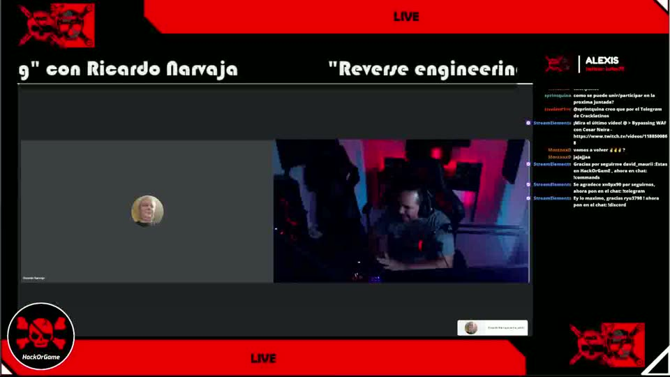
¿ahora me escuchaste? Sí, ahora sí, ya estamos acá, ya, bueno, si esto se desecalló, o qué sé yo, estas cosas, estas cosas, estas cosas modernas, jajajaja, jajajaja, jajajaja, oye Ricardo, a ver, vamos con, con, con las preguntas que estaba yo, más o menos, efectuando, ya, este, eh, la verdad, como te digo, yo he visto, como comentaban los chicos, ¿no? alguien está preguntando por bien, antes con mi pregunta, a ver, ya, ¿qué opinas de las certificaciones estilo Oset, Ose, de Offense Security, tienen relevancia en la actualidad? ¿En sí qué opinas de esas certificaciones que están relacionadas al campo, digamos, de la parte del reversing? O sea, ¿crees que sea necesario? ¿No es necesario? Hay, hay empresas que eso le dan mucha importancia, yo personalmente, yo si tengo que trabajar en reversing, le doy importancia a la gente que sabe, más que tenga eso, o sea, si tengo, tomo una persona, me puede traer todo el certificado que quiera, pero si yo le pongo algo y no me lo puedo reversear, no me importan los certificados, eso yo, yo si tengo que tomar, pero hay empresas que esas cosas le dan importancia, bueno, todo tiene su importancia, todo tiene su valor, los títulos tienen su valor, los papelitos tienen su valor, los certificados tienen su valor, y ahí, como hay empresas que le dan valor, y bueno, el que lo puede conseguir, mejor, no, no hay problema, pero de cualquier manera, yo cuando me tocó, dentro de la empresa, que no soy el dueño, obviamente soy un empleado, pero me ha tocado, tener que elegir personas, para, para pasantes, o algo así, y yo, o a veces, si algún empleado podía servir, para hacer reversing o no, y le tomamos una prueba, o sea, no le pedíamos ningún papel, primero, tenés que pasar esto, si esto no lo pasás, no sé, llévatelo y, ponelo a algún lado, porque a mí lo que me sirve, que me hagas, que hagas, lo que yo, que hagas el trabajo, o sea, de que puedas reversear, si me traes el más lindo papel del mundo, y no puedo reversear, tres líneas de código, no me sirve, o sea, pero hay empresas donde eso, o sea, no digo que no sirven, hay empresas donde eso tiene mucho, mucho valor, o sea, por eso le digo, depende del ámbito donde te moves, en donde nosotros estamos, en, por ejemplo, en Core, en Health Systems, supongo que en las empresas de Immunity, en las empresas, qué sé yo, en Rapid7, en las empresas que trabajan con Exploit, y esas cosas, supongo que la gente que sabe toma, no toma gente por papelito, pero depende de otros gremios,
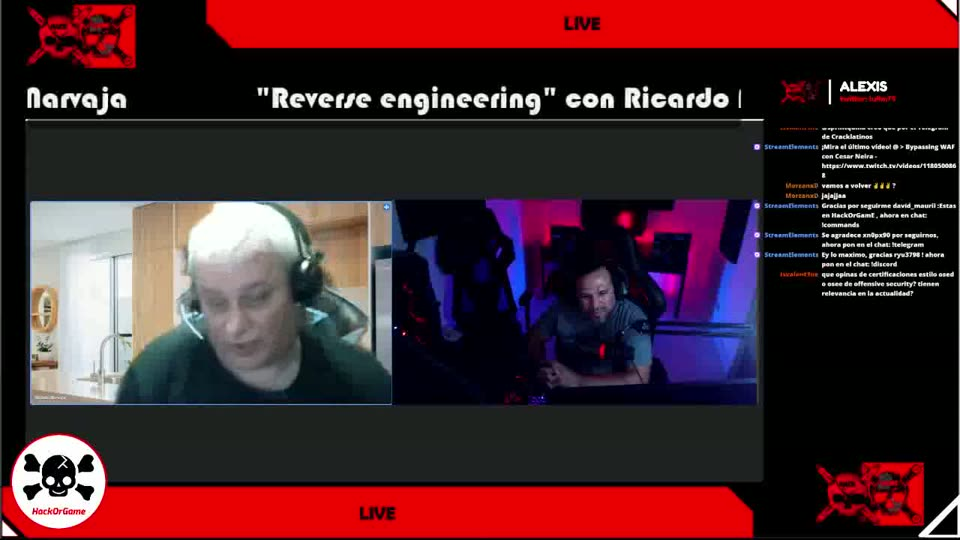
hay muchas variantes de la informática, por ahí, ahí sí, la cosa cambia, ¿no es cierto? Claro, claro, sí, sí, sí, es algo muy cierto lo que tú dices, ¿no? O sea, al final creo que está el hecho de que puede ser mil papeles, pero eso no significa que realmente se puede hacer las cosas, ya, a ver, te hacen una prueba, dice, Nox, dice, C, te hacen, bueno, Nox, para los que no lo conocen, bueno, creo que la gente también lo conoce, él está en Immunity, Trabajó en Core con nosotros, después ahora está en Immunity, pero es el mismo tipo de trabajo, te reversin y generalmente si no servís, no te van a, aparte que, por ejemplo, acá en la Argentina, tenés una ley que los primeros tres meses estás a prueba, recién quedás efectivo después de los tres meses, así que vos por más que vengas y me mientas y me digas que sos mandraque, que sos el genio del reversin o lo que me traga, los papeles que sea, en tres meses se va a saber si realmente servís o no, y si no servís a los tres meses te vas a ir, no te van a, no te van a, de tomar efectivo, entonces esos tres meses es realmente la prueba de que, de que realmente si servís o no, aunque hayas pasado por ahí una prueba más o menos, qué sé yo, en tres meses se va a saber, o sea, y si realmente no servís, podés traer los papelitos que quieras, que no vas a quedar. Claro, sí, sí, sí, es una gran verdad, o sea, es interesante, ¿no? cómo trabajan algunas empresas, más que en tu campo, ¿no? Y eso es que no, no es tan visible como el campo de lo que es el pentesting o el hacking, ya, en el cual a veces se da más valor al tener las certificaciones que realmente conozcas o no, ya, pero como tú dices, no, al final eso cae por su propio peso, ¿no? O sea, eso es algo así, a ver, ¿cómo está el campo laboral para el reversing de la actualidad? Ya, eso lo voy a hacer como una pregunta final, este, Lenox, ya, vamos primero a mi pregunta para, para más o menos, este, continuar un poco con el ritmo, ya, eh, mira, la verdad, o sea, yo haciendo pentesting, este, me he visto sujeto a algunas cosas muy particulares a hacer el tema, este, digamos, de compilación, o sea, porque, bueno, por necesidad, digamos, este, que se encuentre entre un scope, en fin de cosas, ya, para buscar, no sé, para tajar codeada, yo qué sé, ya, este, pero vamos a la pregunta del millón, y justamente esa pregunta, ya, este, eh, que, y, que justamente menciona el Lenox, que es el clon de Lenox, no sé qué decirle, ya, eh, un chico que quiere desarrollarse, digamos, como, como reverso, nada más, con el reverso, acá en el perro se entiende mal reverso, como que tiene el reverso, en el tema del reversing, ya, ¿qué campos puede encontrar laborales? Y acá voy, nuevamente Ricardo, a que tú más o menos nos indiques, o sea, en la actualidad tú me has hablado de cracking,
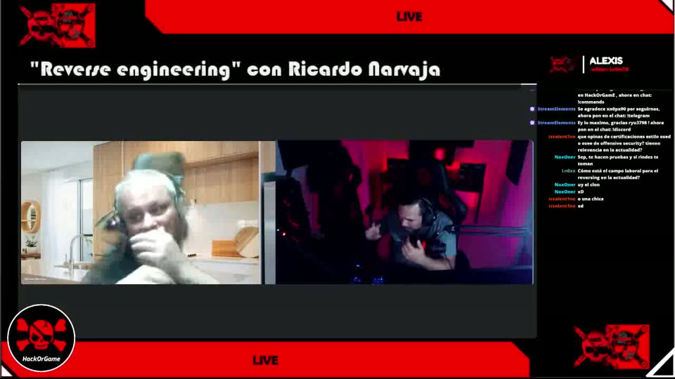
tú me has hablado de exploiting, tú me has hablado de otras cosas más, en las cuales se pueden dedicar, ¿cómo se puede desarrollar un chico que hace reversing? O sea, ¿cuál es lo que continúa de todo eso? Y, y en qué empresas, no solamente, digamos, acá en América Latina, sino a nivel mundial puede encontrar trabajo con respecto a esto. Bueno, la pregunta del millón significa que si la contesto me dan un millón. ¿No? Bueno, no, pensé que con la pregunta del millón me daban un millón. Bueno, mirá, hay mucho trabajo en reversing, hay muchos campos, o sea, tomá, todas las empresas de exploiting, todas las empresas de antivirus, todas las empresas que trabajan en malware, todas las empresas que tienen que ver algo con la seguridad, porque en la seguridad necesitas alguien que haga reversing. hay mucho, hay muchas variantes, o sea, yo lo que veo es que la mayoría de los que trabajan en esto terminan trabajando para alguna empresa de afuera, o sea, muchos excompañeros nuestros de CORE terminan trabajando para empresas que no son de acá de Argentina, por ahí cobran en dólares, o por ahí les pagan bien, o sea, bueno, acá también igual cobramos un buen sueldo para Argentina, pero voy al hecho de que, de que, bueno, no es lo mismo cobrar en pesos argentinos que cobrar en dólares, ¿no es cierto? Obviamente. entonces mucha gente consigue trabajo con empresas que tienen sede en Europa o en Estados Unidos y trabajan remoto desde acá. Y bueno, obviamente trabajar en un país como los nuestros y cobrar en dólares, obviamente es lo mejor, porque vos tenés el costo en la moneda local y la entrada en dólares, o sea, que mejor puede ser que eso. Pero bueno, hay mucho de eso, hay mucho de eso, y hay mucha búsqueda, yo creo que hay búsqueda, porque la mayoría de los que son buenos reverseando ya están ubicados, la mayoría están ubicados en las empresas, y por ahí cambian de una empresa a otra, pero son siempre los mismos, entonces se necesita gente nueva, se necesita sangre joven, y pienso que se busca, o sea, lo que yo les digo es que no piensen que van a estudiar reverse ni encontrar trabajo al mes siguiente. Yo creo que lo mejor es empezar a estudiarlo como si fuera algo, como un hobby, y vamos metiéndole patas, y vamos aprendiendo y mejorando y mejorando, y va a llegar un punto que uno, a mí cuando yo entré por ejemplo en Core la primera vez,
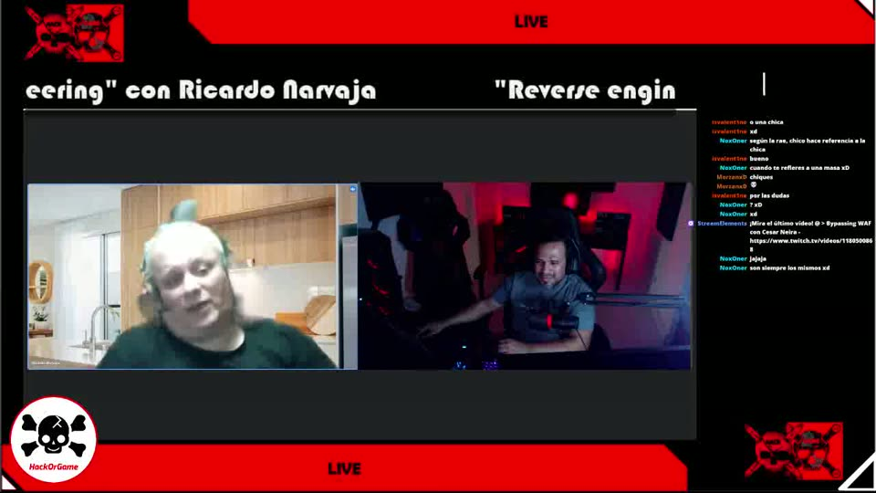
yo trabajaba en ascensores, como yo les dije, y yo, bueno, hace rato que tenía la lista de crack latinos y todo eso, pero no trabajaba en exploiting ni nada que ver, y estábamos hablando que crack latinos empezó en el 2000, y esto estamos hablando de 6, 7 años después, o sea, hace 16 años entré en Core, y qué pasó, estaban buscando gente, buscando gente, buscando gente que sepa reversing, y tomaron a Nahuel Riva, uno de los ex compañeros de Core, que ahora trabaja también para una empresa, que es también francesa creo, y él les dijo, bueno, pero escúchame, ustedes están buscando empleados, y tómelo a Ricardo, que nos enseñó a todos nosotros, que él está sin trabajo, yo justo estaba, estábamos en una época de crisis acá en el 2000, 2001, y nos habíamos quedado sin trabajo, estábamos trabajando así, haciendo changas, haciendo trabajitos sueltos, y entonces me llamaron, y yo les dije, mirá, yo hice esto, no, no, sí, me atendió Gerardo Richarte, que es un capo, que era un capo ahí, uno de los fundadores de Core, después se fue de Core, ahora está poniendo satélite, y él me dijo, sí, no, lo importante es que tengas ideas de bajo nivel, y de ingeniería, de cracking, y todo eso, porque lo demás, que necesitas para exploiting, qué sé yo, saber un poco de Python, por ejemplo, y el resto lo vas a aprender con los años, te vas a dar cuenta, lo más importante, lo más difícil es el bajo nivel, vos lo dominás perfectamente, y con eso entré, y bueno, hace 16 años estoy, y fui ascendiendo, ascendiendo, ascendiendo de los cargos, así, de los niveles, de los más pichis, más bajos, hasta ahora que estoy ahí, en el mundo de los más altos, y bueno, y poco a poco, uno va mejorando, pero, yo no lo busqué, yo no lo busqué, yo lo hacía como hobby, lo hacía porque me gustaba, y creo que, eso es algo lindo, que uno haga lo que a uno le gusta, y después si sale, bueno, mejor, o sea, eso creo que es como después, ahora, si vos lo buscás como carrera, bueno, tenés que enfocar, decir, bueno, yo quiero hacer análisis de malware, bueno, entonces, primero vas a tener que aprender, si vos querés hacer análisis de malware, lo mismo que exploiting, lo mismo que todo, tenés que tener una buena base de ingeniería inversa, entonces, una vez que tengas una buena base de ingeniería inversa, después derivás al malware, al exploiting, toda la distinta variedad de cosas que tienen, de subramas que tienen, las posibilidades de hacer ingeniería inversa, ¿no es cierto? Pero tenés que tener una buena base de ingeniería inversa, por eso yo esos cursos que puse,
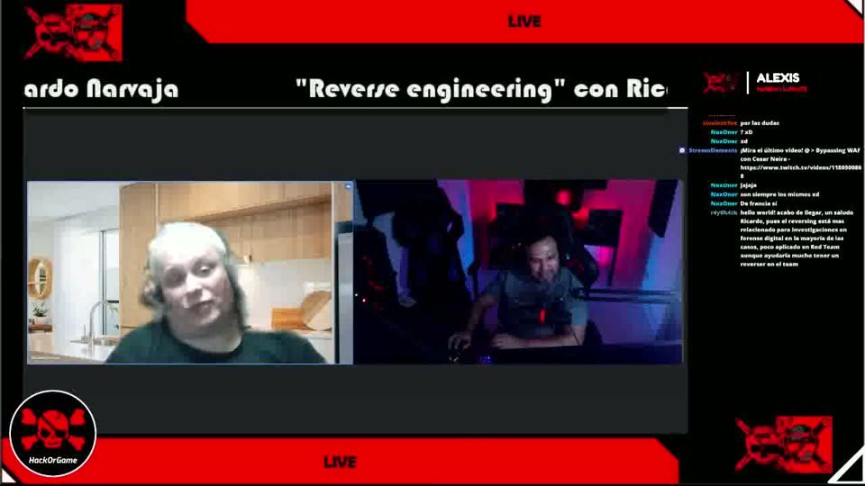
el último curso que puse en YouTube, ese de, que ya es un poquito más avanzado, que los cursos originales de OLL y todos esos, empiezan despacito, pero después van subiendo más a nivel más profesional, y entonces, creo que el que domina eso, realmente tiene muchas posibilidades de conseguir trabajo. Hay una pregunta que justamente menciona Valentín, y este, en la cual es, si tú me vas a asembrar, o sea, yo soy electrónico, digamos, de carrera, o sea, yo he visto, yo he visto también el tema de lo que es este, o sea, el lenguaje de asemblador, lo he programado, lo he hecho hasta alguna vez móviles, o sea, con esos, este, sensores de, justamente esos sensores, me parece de, arduo con el nombre ahorita, de este, de dos colores, nada más, ya blanco y negro, para que se movilice, digamos, sensor, se desarrolla alguna vez a un tipo, digamos, de algoritmo, referente a eso en asemblador, ya, pero la verdad, como te digo, más que eso, o sea, nunca encontraba realmente, este, digamos, algo más interesante, y cuando yo comencé, ya en el tema de lo que era serpentesting, este, en sí, y comencé a aplicar ciertos conocimientos que por ahí tenía, ya, como que las cosas cambiaron, de perspectiva, ahora, la pregunta que hace justamente Valentín, ¿es necesaria realmente tener una carrera, digamos, universitaria para esto, o sea, o realmente tú, las personas que tú conoces, son así? Yo cuando empecé, yo cuando empecé, yo tengo cuatro años de ingeniería, pero los cuatro años de ingeniería que tuve yo, los hice en el ochenta y pico, o sea, no te enseñaban nada de informática, porque en esa época la informática era nada, o sea, que yo no aprendí nada de informática en la universidad, distinto es ahora, ¿no? Pero yo estoy hablando de mí, de mí primero, primero voy a hablar de mí, después voy a hablar de ahora, y después el resto lo aprendí por mi cuenta, todo lo aprendí por mi cuenta, y soy absolutamente autodidacta, por eso la gente le dice que, dice que les gusta como yo explico, porque yo explico en forma sencilla, porque como soy autodidacta, trato de no usar términos muy difíciles, y entonces la gente dice, ven, este explica fácil, pero bueno, obviamente, no sé si es necesario, pero cuanto más sepas mejor, obviamente, si vos vas a la facultad y te enseñan, hoy día, antes no te enseñaban eso, pero hoy día, te enseñan a programar en C, o te enseñan a C++, o te enseñan, y bueno, si ya tenés todo eso, tenés algo importante, o sea, quizás, no sé si la carrera, pero el conocimiento que te pueden enseñar en una facultad de hoy día, sobre algunas cosas, no te va a servir quizás para específicamente solo eso,
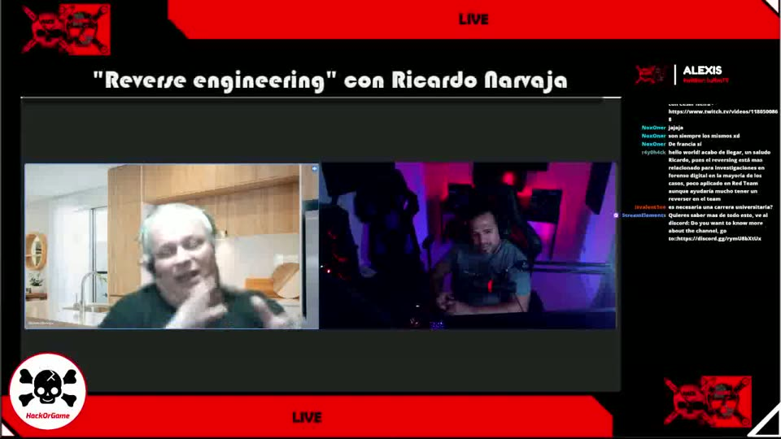
pero te va a complementar mucho tener cosas sabidas de programación, después vas a necesitar aprender todo lo otro, ¿no? Pero bueno, yo tuve que aprender todo, y eso es como que ya tenés algo sabido, ¿no es cierto? Una parte sabida. Entonces, tu recomendación sería que de alguna forma tenés la posibilidad de estudiar, o sea, y realmente te gusta el mundo ya de la ingeniería reversa, o sea, que aproveches así de simple, ¿no? Sí, yo creo que, mirá, yo siempre le digo esto a los jóvenes, un consejo que le doy siempre a los jóvenes es el siguiente, y esto lo veo yo, porque tengo 58 años, y lo veo a mis compañeros y todo, cuando uno es adolescente, y los padres te mantienen, y vas al colegio, es el mejor momento para aprender, porque vos tenés tiempo libre, y generalmente, bueno, cuando uno es adolescente, el tiempo libre lo usa con los jueguitos, yo no digo que uno no pueda jugar algo, pero traten de no estar 24 horas jugando todo el día, porque todo ese tiempo perdido, el juego no te deja nada, yo era fanático de los juegos, pero realmente, ¿qué te deja un juego? Terminaste, empezás otro, terminaste, empezás otro, te divertís un rato, bueno, perfecto, una hora, dos horas, pero no estés todo el día con eso, entonces ese tiempo, aprovechá y usalo para aprender algo, porque el día de mañana, cuando te casés y tengas hijos, cada hora que vos quieras tener, vas a tener a tu mujer, a tus hijos colgados, diciendo, me llevas acá, necesito esto, necesito el otro, y no vas a tener tiempo, entonces, la mejor época, y los mejores que aprendieron, son los que empezaron aprendiendo, desde los 15, de esa época, cuando el cerebro está bien, esponjoso para aprender, y cuando tenés más tiempo, no es necesario que estés todo el día con esto, podés salir a bailar, podés divertirte, podés jugar a los jueguitos, pero, hace una horita, un rato por día, y entonces, vas a ver que cuando llegues a los 20 y pico, vas a ser un genio, no sé si un genio, pero vas a dominar, genios no hay en esto, vas a dominar, por lo menos, la ciencia, más o menos, como para poder trabajar, o hacer lo que se te haga, perfecto, este, algo que también parece, me está yendo, y que quizás no me ha respondido, este, este, Ricardo, era básicamente la diferencia, ¿no? O sea, hablábamos del pasado, hablamos del presente, y hablamos de la oportunidad de trabajo que se tiene, y hablamos de los campos que se tienen, por ejemplo, el tema de malware,
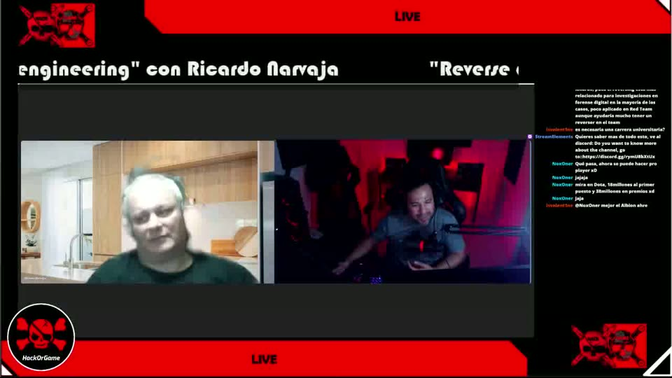
el tema de exploiting, ¿qué es lo que hace un exploiter? Forense también, el otro, el otro, también dijeron forense, también análisis, forense también, este, claro, está ahí también, claro, ¿qué hace, vamos a cosas puntuales, ¿qué hace, por ejemplo, un exploiter, qué hace alguien que analiza malware, o sea, cómo es que ahí en ese punto se diferencia, qué utiliza, qué no usa, o sea, a qué se dedican ellos, para que más o menos entiendan a los chicos? O sea, todo se basa en la ingeniería inversa, todo, el exploiting, el análisis de malware, todo, tenés que analizar un programa, sin tener el código fuente ni nada, todo, el exploiting también, el exploiting es más que nada, el hecho de encontrar, no sé si, bueno, hay quien también hace, como es, research de vulnerabilidad, de encontrar vulnerabilidad, es decir, una cosa es el exploiting, otra cosa es el backhunting, todo se puede hacer con reversing, a muchos lo hacen con programas, puseando, pero, pero digamos, volviendo al punto, el exploiting nosotros, el trabajo que hacemos nosotros, existe una vulnerabilidad, y tratamos de escribir un exploit, para vulnerar el programa ese, o sea, para tratar de, de aprovechar esa vulnerabilidad, para ejecutar código en el programa, de la máquina que corre ese programa, y, y tomar control de la misma, ¿no es cierto? Y el tema de lo que es, o sea, el análisis de malware en sí. Y el análisis de malware, es tratar de ver qué es lo que hace el malware, o sea, si es un, qué sé yo, un, un, un, un bug, o si es, qué sé yo, un ransomware, el tipo entra, qué es lo que hace, modifica, vos tenés que hacer un reporte, seguramente, y tenés que decir, mire, este hace esto, hace esto, cambia estos archivos, hacia acá, se conecta con esto, y así, tenés que analizar y entender qué es lo que hace, ese, ese, ese, ese archivo, ese archivo, que es un malware, o ransomware, otro llano, o todas las variantes que haya de, de, de archivos maliciosos, entonces, lo tenés que analizar, y en vez de analizar un programa para encontrar una vulnerabilidad, o para, para encontrar un error, lo que vas a tratar, es tratar de entender qué es lo que hace, para ver cuál es el comportamiento, y si es posible, tratar de revertirlo, el daño que hizo, porque generalmente, esos archivos hacen algún daño, entonces, si lo podés entender, posiblemente lo puedas revertir. Son preguntas básicas, para, bueno, repetí, como hay gente también nueva, me entiendo un poco, básicamente, o sea, ya con, con, con tu, tu desperticio, y con la experiencia que tienes,
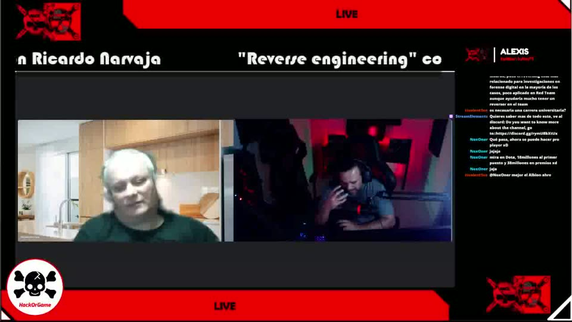
qué es cada concepto, de tenerlo bien claro, ahora, vas a hablar de un sistema de exploiting, y algo muy interesante, o sea, ¿cómo es que tú has visto que, por ejemplo, ahora, en la actualidad, es tan difícil encontrar un exploit en Windows, o sea, ¿cómo es que ha evolucionado el sistema operativo en el tiempo? Sí, todos los sistemas operativos, no es que es tan difícil, hay, lo que pasa es que eso es más difícil de hacer, porque, la gente de Microsoft, ha tomado gente que trabajaba en exploiting, para que los ayude a, a, a, digamos, a mitigar, las explotaciones, que había más comunes, que antes había exploiting, pero como chorizo, salían todos los días, y, digamos, al existir las mitigaciones, ahora, hay cosas que se pueden hacer, y hay cosas que no, con lo cual, hay exploits que salen, y que hacen mucho ruido, y todo, y que funcionan, pero, no es como antes, que salían, mucho más frecuente, ahora es más difícil hacerlo, porque tenés que vencer las mitigaciones, aparte de, de explotarlas, tenés que vencer las mitigaciones del sistema, que están hechas casualmente, para tratar de evitar que se exploten, las vulnerabilidades, que fueron agregadas, fueron agregadas en los sistemas, con los años, poco a poco. Entonces, hecha esa labor, o sea, te pregunto eso, por más o menos entender, a qué haces referencia, con esas mitigaciones, por hacer un poco, cómo es que, por ejemplo, en el año 90, en el Windows 98, o sea, qué podías encontrar, como ahorita un Windows 11, o sea, qué cosas han visto, que han incorporado, o sea, durante el tiempo, y qué particular. Es un poco técnico, explicarlo, pero Windows 98, no tenía, la randomización, de las direcciones de memoria, de los módulos, todos se ubicaban en direcciones fijas, con lo cual, cuando uno quería saltar a alguna dirección de memoria, siempre estaba el mismo código, lo cual era bastante predecible, era muy fácil de explotar, ahora todo está randomizado, casi todo, el 90%, el 99%, con lo cual, no solamente tenés que explotarlo, sino que yo tratar de encontrar alguna forma, de poder liquear, o encontrar la información, de las direcciones, donde están los módulos, porque cambian, de máquina a máquina, con lo cual, si yo hago un ejemplo de mi máquina que me sirve, no lo puedo publicar, porque al otro no le sirve, entonces tengo que tratar de buscar métodos para evitar la randomización, después hay otros métodos, como el D, que significa la protección de, donde entran los datos, para, de lectura de datos, donde hay ingreso de datos, normalmente, antes los programas, vos saltabas ahí, el mismo ingreso de datos, podías armar un código ahí,
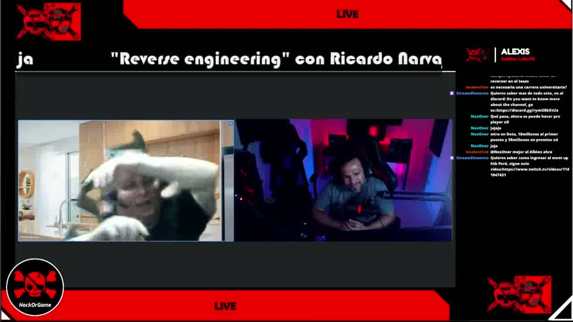
y si podías, había un nuevo programa, saltabas ahí a ejecutar, y era todo fácil, ahora, esas direcciones, esas zonas, de donde entran datos, o sea, no tienen, no tienen permiso de ejecución, o sea, si vos saltaste, que la llegan, tenés que, hacer RO, ROPEAR, o lograr darle permiso de ejecución, mediante RO, porque son cosas técnicas, un poco difíciles de explicar acá, sencillo, pero, pero bueno, después hay muchas más, así, mitigaciones, que canaricen los stack, para evitar los overflow, canaricen como una especie, de valores random, que, chequea antes de llegar, a los return address, para, para tratar de evitar, de que haya un overflow, que vos puedas explotarlo, y, y mil más, o sea, hay muchas más cosas, pero bueno, todavía hay, por eso seguimos trabajando. Ahora, este, no sé, si de ahí, digamos, se habla mucho del tema comercial, o sea, los exploits, más vinculados mucho al tema comercial, ¿no Ricardo? O sea, no es que tú tengas un sistema operativo, en Linux, y realmente, pues, se puede sentir súper seguro, o sea, o sea, creo que, tú, para ti, tu perspectiva, ¿cómo es que, tú, categorizas, bueno, digamos, categorizas, básicamente, lo que ha hecho este, digamos, Windows, con su equipo de seguridad, o sea, siguen haciendo un buen trabajo, o tú crees que hay cosas que todavía están dejándose bastante de lado, muchos temas de investigación, o sea, que aún se puede realizar a través de Windows, no sé. Ah, siempre, han hecho un buen trabajo, pero siempre el ser humano se equivoca, y siempre hay fallos, o sea, es muy raro, que yo hace años que vengo diciendo gente que dice, sí, mirá, no va a haber más explo, porque hicieron esto, porque hicieron el otro, no sé, explo y hay siempre, porque hay errores, hay, te das cuenta que la gente se equivoca, y eso sigue existiendo, y creo que va a seguir existiendo, más en cosas tan grandes, complejas, va a seguir existiendo, posiblemente, bueno, sean más difíciles, el hecho de que sean más difíciles los explo y encontrar vulnerabilidades hoy día, hace que los precios sean más altos también, o sea, cuando yo empecé, si vos encontrabas una vulnerabilidad, te pagaban dos docenas de facturas, y ahora, hay vulnerabilidades que pagan medio millón de dólares, con lo cual, es, es muy diferente, ¿no es cierto?, por supuesto, es muy difícil encontrarla, esa de medio millón, pero habrá alguna de 15 mil dólares, que también, me puede servir para comer pizza, que se yo, no sé. Y eso es lo que quería preguntarte, y si sale asintiendo un poco las cosas, ¿no? ¿Se gana bien haciendo el tema de exploiting, o sea, análisis de malware, ¿se puede ganar bastante bien?
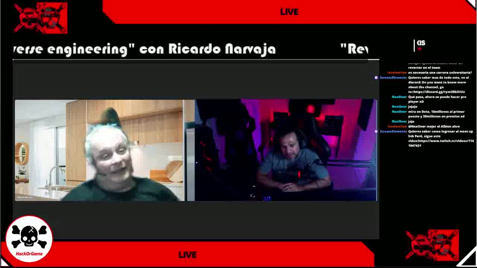
Y, por ejemplo, si vos trabajas, pues como yo trabajo por una empresa, tengo un buen sueldo, qué sé yo, pero hay gente que, sobre todo, si sos grande, en general, la gente más grande, le gusta más tener un buen sueldo, una buena jubilación, qué sé yo, es más, busca más una cuestión así, pero bueno, hay muchos jóvenes que van un tiempo a una empresa, aprenden, qué sé yo, y después se ponen a trabajar por su cuenta, a vender cero days, a buscar vulnerabilidad por su cuenta, qué sé yo, total, si vos no tenés muchos compromisos, si algún par de meses no sacás nada, y bueno, total, por ahí todavía no tenés esposa, hijos, no tenés grandes compromisos, y entonces podés aguantarte un par de meses, por ahí después la pegás con algo bueno, y entra un montón de plata, entonces es como, por ahí podés ganar, pero por ahí quizás es más inestable, el trabajo en una empresa es más estable, ¿no es cierto? claro, si se entiende, dice que 9 millones por ahí, por exploit, sí, tiene que ser, igual tenés que estar, para sacar uno de esos, tenés que estar un año laburando, pero bueno, hay que ver si lo sacás, pero bueno, es como todo, cuanto más vale, más difícil es, obviamente, claro, claro, sí, sí, sí, me imagino, ya, muy bien, a ver, chicos, alguna pregunta que ustedes quieran, este, repetir, realizar acá, a Ricardo, ya, con respecto al mundo del reversing, al mundo de lo que es el exploiting, acá, este, aprovechemos un poco, la experiencia que tenemos Celia, porque bueno, de veras, como les digo, ya es un poco tarde, y está haciendo todo el esfuerzo, para estar con nosotros, ya, a ver, qué más funciona por ahí, para tener, si me duermo, si me duermo, qué sé yo, cualquier cosa griten así, me despiden, acá Ricardo, acá Ricardo, ya, vengan ustedes, con qué, eso lo dije, lo dije, sí, lo mencionó, bueno, lo vuelvo a repetir, si uno no tiene mucha experiencia, conviene empezar con, debugger sencillo, el curso de Oli, yo siempre, los que no tienen mucha experiencia, les digo que se instalen una imagen, una imagen de Windows XP, y empiecen con el curso de Oli, que era el más fácil, era de esa época, con menos protecciones, y todo más sencillo, y un debugger que tiene, una curva de aprendizaje más sencilla, pero bueno, con el tiempo, uno después va saltando, y Oli, es un debugger que ya quedó un poco, más limitado con el tiempo, solamente existe versión de 32 bits, después se va saltando al, X64 DBG, que tiene versión de 32, de 64 bits, después quizá LIDA, WinDBG, qué sé yo, radar, de GIDRA, hay un montón de variantes, ahora entre, algunos son debugger, lo que dije, otros son desensambladores y debugger,
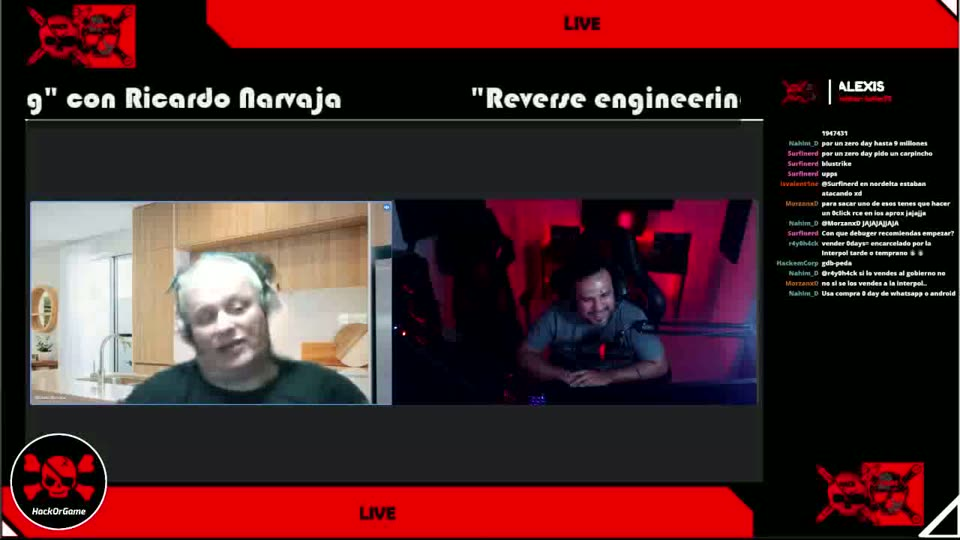
otros desensambladores solo, y bueno, hay todas esas tools, pero creo que lo que conviene siempre, es empezar por lo más sencillo, quizás agarrar el curso de Oli, el que no tiene ni idea, le va a servir más, en este momento, que agarrar el último curso más moderno, que seguramente va a ser más difícil, agarrar los cursos más viejos, como empezamos nosotros, con las cosas más sencillas, y después cuando termina ese, agarrar uno más difícil, y después ir haciendo la escalerita. Perfecto. Listo, a ver, a ver chicos, alguna pregunta más que por ahí, ustedes quieran, este, de repente hacer, llegar acá, mi amigo Ricardo, de mi lado, como digo ya, creo que hice las preguntas, más o menos necesarias, para hacer un poco. Ahí dice, vendérselo de ahí, encarcelado por la Interpol, y qué sé yo, así es el riesgo, el riesgo, son millones, son miles de dólares, obviamente, nadie arriesga por dos pesos, ¿no? No sé, yo no hago mucho malware, yo trabajo más que nada en exploiting, por eso ahí me preguntan, ¿cuál es el malware más complejo? No, porque yo trabajo más que nada en exploiting, sí, y vulnerabilidades difíciles, bueno, un montón, pero de malware no, no sé si. Y si cambiamos de pregunta, o sea, para ti, ¿cuál ha sido, digamos, el exploit más complejo que has encontrado, y que ha sido de gran valor, y que lo tienes como un baluarte, como de tu repisa, y tú encontraste esto, una cosa así, o sea. El exploit de Blue Keep, ese fue muy bravo para mí, meses me llevó, realmente fue bravo, me costó muchísimo, y eso que había algo de información, y todo, fue muy difícil, para mí, el exploit de Blue Keep, que salió hace unos años en Windows, ¿no? Remoto de Windows. Ese fue bastante, bastante bravo, pero, bueno, o sea, nosotros, nosotros como trabajamos en exploiting, no quiere decir que no podamos ser, agarrar un malware y entender lo que hace, si nos ponemos, lo vamos a entender, la mayoría están empacados, en los cursos nuestros, se enseña desempac, empacking también, es de cómo desempacar, así que, más o menos, estamos en el tema, lo que pasa que, nos falta la práctica, no estamos en el día a día, en eso, pero, el que sabe reversing, lo va a agarrar, y, en breve, se va a poner al día, si lo tiene que hacer, si a mí me dicen, mañana, mira, tenés que trabajar en análisis de malware, en un mes, te puedo asegurar que me pongo al día, y ya estoy sacando cosas como locos. Y justamente, en esa parte de packing, y hablando un poco, digamos, del tema del bypaseo, de elementos de seguridad,
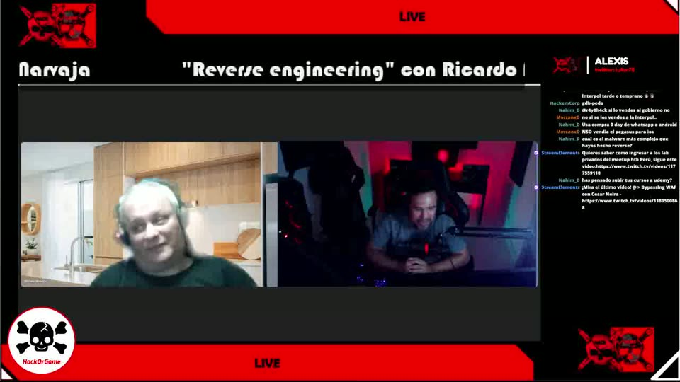
en tu experiencia, Ricardo, ahí, bueno, supongo que has experimentado, ¿cuáles siguen siendo funcionales, de alguna forma, que pueden romper un poco, o bypasear justamente, esos tipos de protección, o en este caso, de tipo, no sé, de tipo endpoint, de tipo de al lado cliente, como un antivirus, ese tipo de cosas, o sea, para ti, que sigamos, técnicas que siguen siendo completamente funcionales, y hasta el momento, sigue siendo complejo, ¿no? Para, digamos, un antivirus tratar de, no sé, de investigarlo. O sea, es un poco técnico, explicar eso, quizás si uno se pone a explicar esas cosas, es un poco técnico. Hay algunas preguntas, hay un poco más, se río por acá. Ok, ok. Porque, me pongo a explicar cosas técnicas, ¿qué puedo sacar? Para mostrar, cosas, me parece que eso, vamos para, para profundizar mucho para el lado técnico, y creo que hay otras cosas más divertidas. Bueno, siempre cuento la misma anécdota, esta anécdota siempre la cuento, y la voy a contar, porque todas las charlas mías siempre la cuento, y como la cuento siempre, y la del público se renueva, algunos ya la conocen de memoria, pero algunos no la conocen. Cuando yo estaba, dos mil y pico, no sé, dos mil, cinco, por ahí, no se me acuerdo exactamente el año, ya era más o menos conocido, porque ya estaba aquelacratino, ya más o menos, había hecho un pequeño nombre, ¿no es cierto? Y entonces, me llaman, de una empresa, que no, nunca digo el nombre, porque no la quiero decir, porque todavía existe, y todavía anda dando vueltas por ahí, es una empresa multinacional, y me dice, mirá, estamos probando una protección para un juego, y queremos que, vos pruebes a ver si la podés vencer, porque es una protección que hemos gastado millones, de dólares, tenemos los mejores ingenieros, los mejores programadores, los mejores, y si, y queremos que pruebes, a ver si la podés vender, sabemos que no, sabemos que no, que no vas a poder, pero, porque está hecha con, todo acá, con todos los mejores, acá tenemos unos cracks, unos genios, acá, bueno, le digo, mirá, si tenés genio, tenés suerte, porque yo no soy genio, yo soy un tipo que rema, le digo, genio es Edison, qué sé yo, Einstein, Tesla, no sé, qué sé yo, yo soy un remador, le digo, pero qué sé yo, humildemente, le dije, no, pero si tenés genio, no sé, quizás no te convenga, mandármelo, porque por ahí, yo no puedo, por ahí, yo no doy la talla, para eso, tan difícil como vos decís, no, no, pero a mí me dijeron, que vos tenés mucho ingenio, y quiero que la pruebes, y si lo podés vencer, el premio, ese era una fortuna, no me acuerdo, dólares, era encima, un montón de guita,
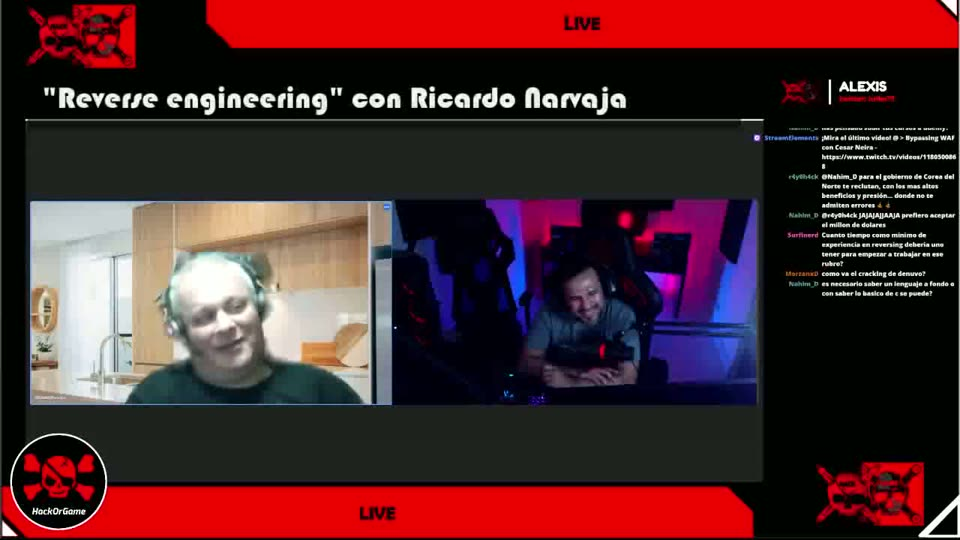
no una fortuna, pero digamos, era bastante plata, y yo digo, bueno, mándamelo, me lo mandó, entonces yo agarré, qué sé yo, habrá llegado a las 3 de la tarde, entonces, me dice el tipo, mirá, es un programita, que va a ser la base de una protección para juegos, que todavía existe hoy día, esa protección existe, pero bueno, mejoró, hace tantos años, mejoró, y dice, esta va a ser la protección del futuro, y solamente lo podés ejecutar 10 veces, y después es imposible que lo puedas volver a ejecutar, bueno, vamos a probar, entonces lo abrí, lo empecé a mirar, estaba protegido, era como un castillo con cocodrilo alrededor, todo lleno de, tipo que, si vos querías entrar por la puerta, te tiraban de todos lados, se iba descomprimiendo en tiempo real, se iba, estaba ofuscado, un montón de cosas, eran bastante nuevas en esa época, y yo lo vi, digo, esto es más difícil que a mí, tiene razones, entonces agarré, digo, a ver, vamos a hacer una prueba, agarré lo que antes se llamaba, el filemono, regmono, me acuerdo, esas tools para ver la actividad del ejecutable, ahora se llama process monitor, entonces vamos a mirar a ver qué es lo que hace esto en el sistema, entonces empecé a mirar la actividad del ejecutable, y vi que siempre accedía mucho a un archivo, entonces fui a esa carpeta, y agarré, hice clic derecho, y lo cambié a read only, chao, funcionó para siempre, entonces, lo llama el tipo, me dijo, todavía ha pasado una hora, no sé qué, digo, digo, qué tal, dice, qué pasa, dice, te faltó algo, no te llegó, no, ya me llegó, ya está, qué, me dice el tipo, no puede ser, sí, ya está, un silencio, el otro lado parece que, no sé, estaban asesinando a varios ahí, a varios ingenieros le estaban cortando la cabeza, no, pero no puede ser, mandame un tutorial, sí, se lo mando por el tutorial por acá, le digo, se lo digo personalmente, agarre, vaya a la carpeta tal, al archivo tal, clic derecho, y póngale la tilde ahí donde dice read only, con eso andas para siempre, hizo un silencio, viste, el otro, así como, silencio sepulcral, así como, los ingenieros se miraban, viste, como diciendo, no nos dimos cuenta, viste, y ahí me parece que varios los mandaron a su casa directamente de ahí, bueno, bueno, y me cortó el tipo, digo, chau, me cagó, este no me paga, digo, yo no me paga más, y entonces, al otro día, yo le había mandado la cuenta a todo, me depositó toda la guita, todo, me cumplió, me depositó la plata, así que bueno,
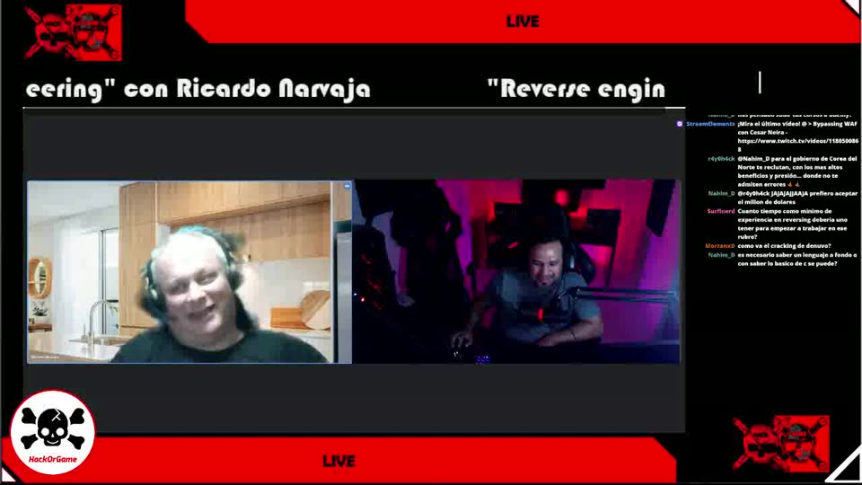
por lo menos, lo logré, y me fue una satisfacción, ¿no es cierto? Y aparte que, yo lo que, me cortó el tipo, porque yo le quería decir, yo le quería decir, antes, viste, que no te quedás con la bronca, porque el tipo ha dicho que ellos eran todos los genios, los ingenieros, que vos no podés, que me dijo todo eso, entonces yo le iba a decir, lo que hicieron los genios, lo que hicieron los genios de ustedes, los pobrecitos de nosotros los pudimos vencer, que no somos genios. Ahí te hacen un montón de preguntas, este Ricardo, ¿cuánto tiempo como minio de experiencia, en revés, debería uno tener, para empezar a trabajar en este rubro? Y el tiempo depende de la persona, es más o menos que uno agarre, que pueda más o menos manejarse, hay gente que le lleva menos tiempo, hay gente que le lleva más tiempo, también depende del tiempo, cuántas horas le dedicas, es muy difícil poner un tiempo, yo te digo, me pasaba las noches, cuando estaba en ascensores, me pasaba las noches, y de día trabajaba y de noche, o sea, yo ya era casado, todo, está bien, no teníamos hijos con mi señora, pobrecita que ya falleció, y me pasaba las noches con eso, ¿no es cierto? y a veces dormía para una hora, que yo me volvía a levantar y seguía, y volvía a dormir así, bueno, era más joven, ¿no es cierto? y bueno, y claro, pero también depende, hay gente que necesita más tiempo, hay gente que necesita menos tiempo, yo pienso que en unos años, en un par de años, pienso yo que, si uno le pone ganas, va a estar bien, creo yo, pero hay que ponerle ganas. Perfecto, y mencionas también, cómo va el cracking de nuevo, no entiendo esas preguntas, no sé, he hecho referencia, pero es otra cosa, me parece, y otra más te preguntan acá, ¿es necesario saber un lenguaje a fondo, o con saber lo básico de C se puede? Y C, C++, Assembler, todos esos lenguajes ayudan mucho, ayudan mucho, hay un curso ahí en mi página, que se llama C y Reversing, para los que saben C, que agarra pedacitos de código en C, y los muestra cuál es el equivalente, digamos, que vos encontrás después, a bajo nivel, en Assembler, y haces esas comparaciones, y eso te ayuda mucho también, cuando se reversa, ese cursito que se llama C y Reversing, que no es muy conocido, pero mucha gente, después de hacer el curso de Oli, o sea, primero tenés que saber algo, porque ese no es un curso para iniciarse, una vez que hizo el curso de Oli, vio ese curso de C y Reversing, y le gustó, después saltó al de Ida,
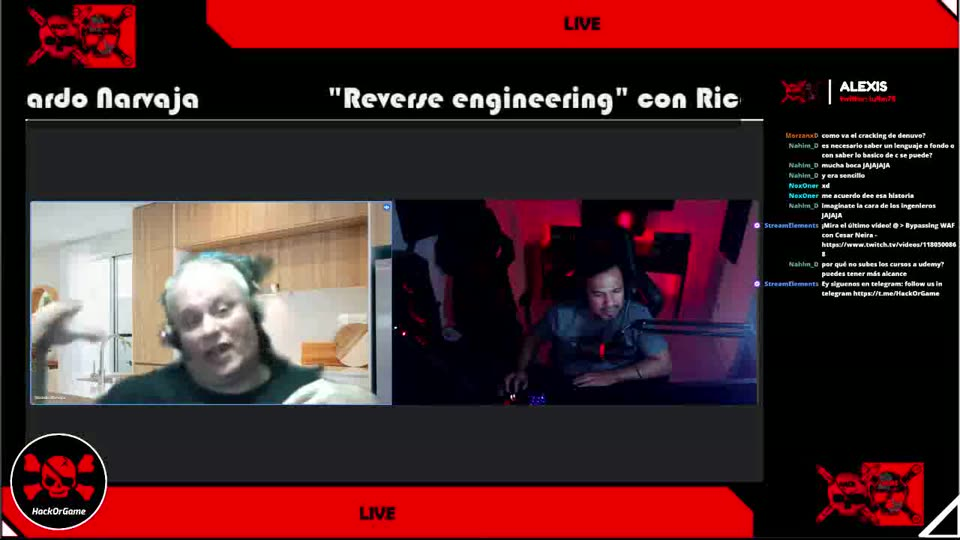
yo tengo curso de Ida Pro, curso de Reversing, curso de Exploit, que se dé todo ahí, esa parte. Ahí dice, ¿por qué no subes tu curso de Odemi? No sé yo, no sé, porque somos viejos, y los viejos nos mantenemos siempre igual, estamos así, somos viejos, somos viejos medio chotos, y ya estamos así, como estábamos, a esta edad ya me parece que cambia, seguimos como estamos, cuando dice equipo que gana, no se toca, y bueno, si venimos bien, y la gente aprende, a mí, yo te digo sinceramente, a mí la satisfacción mía, no es, no me interesa, grandes cosas, yo voy a la Ecopart, o cuando fui a España, que fue la otra vez, antes de la pandemia, y la gente me agradecía, que consiguió trabajo, gracias a lo que yo hice, en España, la gente que sacaba fotos, me pedía autónomos, digo, yo, esto es increíble, yo jamás pensé que esto iba a ocurrir, pero bueno, y pasó eso, y acá, bueno, mismo en la Copart, y la gente me pide, me agradece, me dice que consiguió trabajo, gracias a lo que aprendió conmigo, eso es la satisfacción mía, realmente, no me interesan muchas cosas. Ustedes hacen una pregunta por ahí, el lenguaje, en lenguajes interpretados, como Python, ¿es posible hacer reversing? Ese es más, es distinto, porque normalmente son lenguajes de alto nivel, y no vas a hacerlo de la misma forma, necesitas algo muy específico para cada lenguaje de alto nivel, a veces hay de compiladores, de esos lenguajes de alto nivel, que trabajan directamente, el reversing es más que nada para, se puede, o sea, es más que nada para, qué sé yo, código que se compiló, y lo de compilarse a nivel de procesador, ¿no es cierto? Y esos lenguajes, qué sé yo, Java, Python, todos esos lenguajes, no trabajan a nivel de procesador, digamos, tienen una capa, digamos, entonces, no se utiliza el mismo reversing para ese tipo de lenguaje, pero, hay de compiladores, de Python, creo que hasta de Python 3.9 salió el otro día, un de compilador, y, como es, y, prácticamente lo deja, el código, igual que el original, así que, son bastante, bastante más sencillos de compilar eso, que de compilar un programón, grande, qué sé yo, de Windows, no, no tenemos reversas y aplicaciones para Android, porque yo no trabajo en Android, trabajo en Windows.
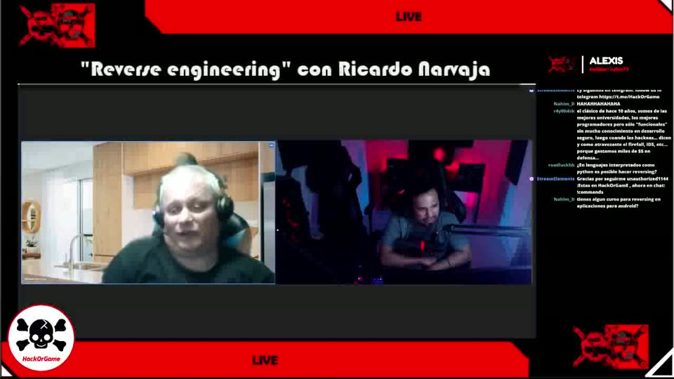
Muy bien, muy bien, bueno chicos, ya para cerrar, ya justamente, ya debes agradecer a Ricardo hoy día, estar con nosotros, y haber un poco alegrado la noche, y haber deslumbrado con muchas cosas que desconocíamos, en el caso del mundo de la parte de la jetería reversa, y a lo más que de toda la parte de los términos, que han sido muy importantes, comprender, porque es un mundo amplio, es un mundo, este, que es bastante complejo también, y como mencionaste Ricardo, no hay mejor forma, digamos, de destacar en lo que tú quieras, si eres perseverante, creo que ese es el simple mensaje, nada más, este, no sé si tienen alguna consulta más que realizar acá, con nuestro amigo Ricardo, el día de hoy, ya para ya, dar fin, justamente, a la jetería, ¿no? Ah, ya, ¿de ahí te pareció? Sí, bueno, eso es lo mismo, son lenguajes, puede ser, pero, viste, nosotros trabajamos en Windows, trabajamos con los programas, y por ahora, esos lenguajes, Rust y todo eso, no se ve, en los sistemas todavía no se ve, o sea, cuando llegue a ser el sistema de Windows de John Rust, ahí hablamos, por ahora, estamos muy lejos de eso, pero bueno, lo que sí les quiero aconsejar, es que los que son jóvenes todavía, les pongan ganas, y que les pongan, que les pongan ganas, o sea, yo cuando, cuando venían los pasantes, me decían, ¿cómo elegís vos un pasante? Y yo les digo, como era la forma que yo elegía un pasante, porque el pasante, bueno, muchas veces, cuando estamos diciendo, ¿cómo tomás una persona? que va a trabajar en ingeniería inversa, bueno, le haces un examen, porque va a trabajar haciendo reversing, pero un pasante no le puede tomar un examen, porque es un tipo que está en la facultad, y viene a aprender, entonces, ¿qué examen le vas a tomar? No le puede tomar un examen, porque el tipo viene a aprender, puede saber algún lenguaje, programarse un poco, que se yo, pero no sabe reversing, porque viene para eso, para aprender, entonces, ¿cómo me fijo yo? si sirve, entonces, yo lo que me fijo, le hago ciertas preguntas, que para mí son esenciales, primero, ¿qué hiciste vos? Y me dice, sí, en la facultad me hicieron, no, no, en la facultad de Jala, ¿qué hiciste vos fuera de la facultad? ¿Hiciste algo, digamos, por tu cuenta, digamos, investigaste algo, desarmaste algún aparato? Porque, la palabra hacker, muchos dicen hacker, pero es la curiosidad, realmente, ¿arbriste algún aparato, para ver cómo funciona? ¿Armaste alguna cosa? ¿Investigaste algo por tu cuenta? ¿Qué hiciste por tu cuenta? O sea, el tipo curioso, yo busco eso, el tipo curioso, y por otro lado, el tipo persistente, o sea, el tipo persistente, si yo veo que, es un tipo que tiene persistencia, que es curioso, y que, y que no se deja vencer así nomás, yo creo que tiene mucha pasta, para ser ingeniero inversa,
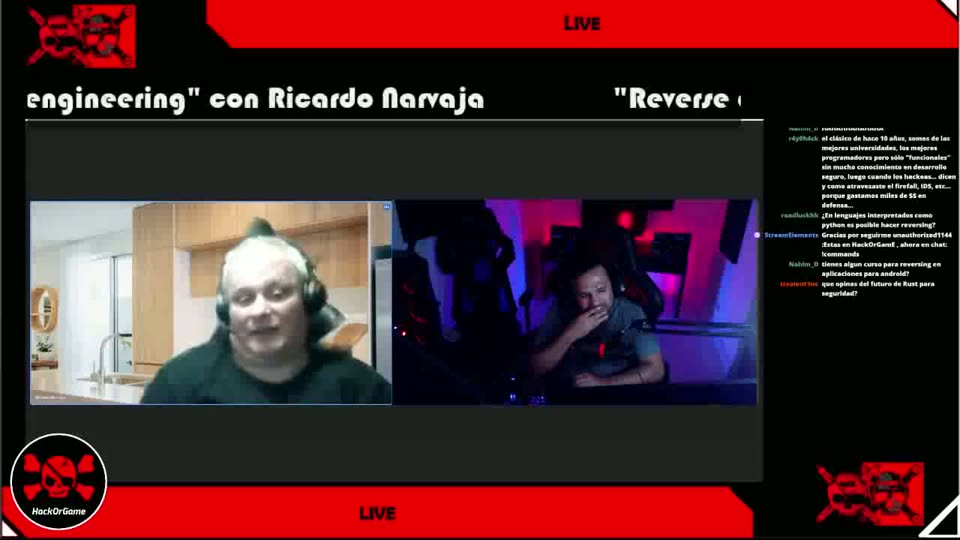
creo que son las características, más importantes, para el ingeniero inversa. Perfecto, perfecto, muchas gracias. Ok, listo, en el siguiente comentario, listo, ya, sin más ni menos, a ver, ya, entonces, chico, entonces, despedimos, sí, nos despedimos, ya no hay casos de Ricardo, este, de veras, Ricardo, tal vez, muy agradecido, espero que, bueno, que, Ricardo, acá, ¿en dónde estás ahorita, la gente no te pudo ubicar, fuera del día, dejaron por ahí tu link, o sea, ¿qué estás ahorita enseñando, este, si alguien quiere, digamos, llevar un curso contigo, los cursos están ahí, están, por ejemplo, está el curso de Oli, está en mi página, después están los cursos en, el curso de Ida, está el curso de Say Reversing, ahí en YouTube están los videos, que son un poco más modernos, esos ya son para Windows 10, y los últimos, están un poquito más avanzados, pero bueno, todos los que los quieren hacer, y quieren preguntar, si entran a CrankLatinos, ahí a Teleram, ahí pueden preguntar, si tienen dudas, o algo les quedó, no les quedó claro, por eso estamos ahí, para las preguntas, y el que tiene alguna duda, está bueno estar en CrankLatinos, porque no solamente yo, todos los que están ahí, la mayoría hicieron en los cursos esos, y si estoy yo, les contesto yo, y si no estoy yo, alguno de los que están, y la mayoría te ayuda, y te va a guiar, lo que no te va a hacer, es hacer el trabajo tuyo, vos vas a tener que hacerlo, pero, te va a guiar, decían, mirá, acá estás equivocado, seguí por acá, seguí, pues digamos, o hace esto, o mirá este camino, o fíjate que no viste esto, o qué sé yo, un consejo, o una idea, o una guía, o un tip, pero no van a, no vas a aprender, haciendo que los demás hagan tu cosa, chocarse también es aprender, o sea, errar, equivocarse, chocar contra la pared, si no, y eso, a veces aprendes más, fallando, que es aceptándolo de primera, chocando, chocando, chocando, chocando, y después salió, bueno, con todos esos choques, vos aprendiste por ahí más, que si se salió de primera, porque todo, es, es eso, ¿no? Es, es chocar, y seguir, y chocar, y seguir, y chocar, y bueno, en algún momento vas a dejar de chocar, ¿qué vas a hacer? Así es la vida. Exactamente Ricardo, ya con la experiencia como, como yo refiero, y como mencionan por ahí, ah, ojo que por ahí, este, para ahí van a llegar unos saludos también al interno, este Ricardo, de algunos chicos que te agradecen bastante, ya, este, el trabajo que tú has desarrollado, durante tantos años, y como es que, te has tomado,
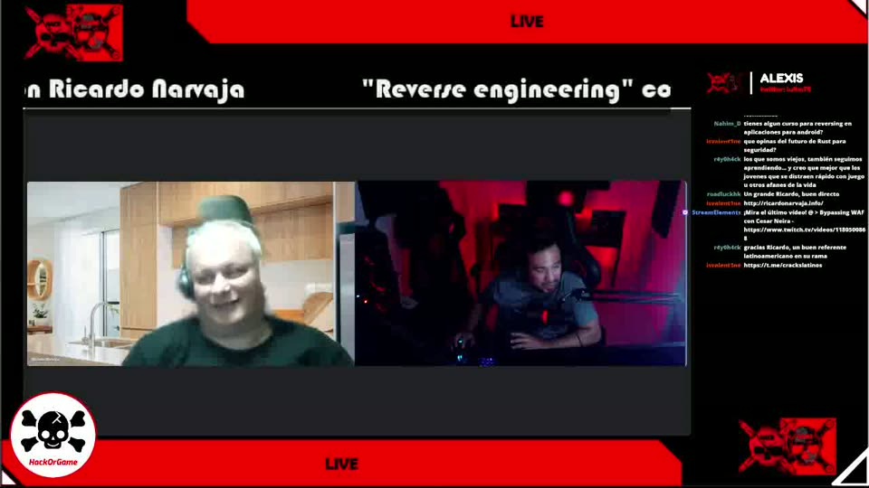
digamos, esa libertad, y has hecho posible, de que mucha de esta información, permita avanzar a muchas personas, porque, en primer lugar, a veces sabes que el idioma, es un, a veces un tema, ¿no? de que, también dificulta, digamos, el aprendizaje, y creo que con el trabajo que tú has realizado, o sea, haciéndolo, esto es en, en el idioma original, en el idioma justamente español, ha permitido, digamos, tener más llegada, y que este mundo, de lo que es el tema de la ingeniería reversa, el exploiting, el tema de lo que sería, pues, el, la de ese de mal, o ese tipo de, ese tipo de ramas posteriores, justamente al tema de reversa, sin que se crezcan, mucho más, me llegan muchos mensajes al interno, ojo, este Ricardo, ya, de agradecimiento bastante por tu labor, ya, en el caso justamente, estoy cumpliendo contigo, NextCop, que me metes un mensaje interno, ya, y Radio Hat, también justamente mencionaron mismo por ahí, dándote un gran seguimiento, listo chicos, ahora sí, cerramos esto, algo que quieras agregar, final, ya Ricardo, una sola frase, una sola frase, que yo cuando era joven, pensaba, que, que la sociedad es una máquina, es como un tren, la sociedad, el tren va, vos no lo podés parar, porque es un tren, pero hay una frase que dice, un mosquito, nosotros somos como un mosquito, un mosquito no puede parar un tren, pero puede llenar de ronchas al maquinista, o sea, que vos por ahí no lo vas a parar, pero, vas a joder por ahí, vas a hacer tus cositas, y vas a hacer tus jodidas, tus cositas, o sea, no lo vas a parar, pero, lo vas a afectar de alguna forma, con tus pequeñas cosas, muy bien Ricardo, ya, listo, ahora sí chicos, nos dejamos de alcanzar, ya, buenas noches Ricardo, estamos viendo más, chao Ricardo, cuídate bastante, ya, ya paso a la parte final, ya con ustedes chicos nada más, ya se agradece bastante, a todos los que han estado conmigo, presentes, y este, simplemente, para finalizar, nada más, gran consejo de Ricardo, ya, para finalizar nada más chicos, como saben muy bien, este, el día de viernes, estamos también con el canal activo, con el tema de la Jatan Bear, que básicamente es un momento de compartir, un momento de comunidad, en el cual desarrollamos máquinas, hacemos retos en conjunto, todos son invitados, si quieren participar, digamos, a estos retos, y todo lo demás, hemos tenido algunas caídas, por respecto a ese tema, porque, este, hemos crecido, y a la vez también hemos caído, yo creo que, hay que poner un poco más de parte, nosotros también, para poder seguir construyendo, un ambiente cómodo, un ambiente en el cual, este, nos permita compartir, y digamos, tener también más llegada, con más chicos, que es también importante, ya, este, voy a repetir, o sea, este canal, o sea, es bastante comunitario, en todo el aspecto de la palabra, o sea, se construye a base de eso, ya, y solamente, les invito, por favor, que tratemos de estar presentes,
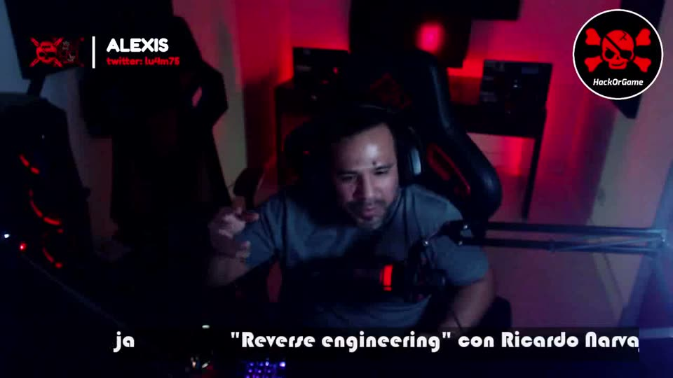
el día, por si acaso, este Najin, estás invitado, el día viernes, ahora que estás acá conmigo, yo sé que estás, ahorita conectado, para que más o menos, nos cuentes tu experiencia, este, que has tenido, previo a un reporte, que la he hecho, que justamente lo mencionaba, cada vez del canal de Telegram, este, espero que también estés con nosotros, compartir un poco más, y así chicos, todos están, digamos, este, completamente abiertos, a entrar en los directos, a estar con nosotros, a conocernos un poco más, y crecer más en comunidad, que es lo que se desea, ya, este, muy agradecido con todo lo que se hacen en estas horas, mis hermanos de Argentina, bastante agradecidos, hermanos de Chile también, hermanos de Bolivia, estamos una hora más, o sea, estamos las 12 de la noche aproximadamente, ya, y el día viernes, el día sábado, perdón, este, no tenemos absolutamente nada, o sea, como digo, he puesto un paralelo, porque este, quiero, era una noche, digamos, de tutoriales, en la cual estoy esperando que los chicos traten de desarrollar algunas cosas diferentes, ya, este, no solamente tema resumente de cajas, que también es interesante, ya, pero este, yo creo que se puede aportar un poco más, con investiciones propias, ya, entonces, aquellos que quieran hacer una presentación, están hoy en algo más presente, o sea, deseando de reversing, de repente de exploiting, o con sus inicios, o sea, tocando una herramienta como, no sé, no sé una herramienta, pero como la YBG, lo que sea, están invitados para hacer un tutorial de un día sábado, si desean hacer eso, o hacer algo, no sé, de repente a pen testing, no, o lo que estén investigando, o sea, no hay ningún problema en eso, pero preferiría que los temas se toquen más en un tema de investigación en sí, ya, y, y también la próxima semana, el próximo día miércoles, tenemos otro gran invitado, también una persona que tiene muchos años en el campo, haciendo la parte de análisis forense, ya, justamente, siguiendo un poco a la secuencia, que es la noche de expertos, que la noche de expertos es una noche demostrativa, ya, en el cual este, viene un experto y hace un desarrollo de una, no sé, de algo que está investigando, y entonces tenemos ese privilegio, el próximo, este, el próximo miércoles, que yo voy a hacer el anuncio ya, durante el fin de semana, como saben, este video está grabado, o sea, para aquellos que de algún modo, pues, este, les quiera salir como referente, yo creo que, hacerlo bastante bien, porque, como comencé con, comencé con Ricardo, por ejemplo, al inicio, ¿no?, le indiqué, que básicamente era para promover a los nuevos chicos, ya, que están en este mundo, esperemos tener, más adelante, gente, de repente acá en el canal, también haciendo una demo, de repente reversing, o tipo de cosas, también para enriquecer un poco más la parte técnica, que ahí se puede tocar preguntas mucho más específicas, ya, y, y, ¿qué más?, nada más chicos, y simplemente si sigan invitados, el día 29, ya, para aquellos que están en Hub de Box, en ese tipo de cosas, tenemos lo que es el evento del Panama Hack en el canal, es el 31, perdón, es el 30 y el 31, ya, este, de octubre, ya, justamente noche de Halloween, ya, es una noche diferente, en esta noche de Halloween,
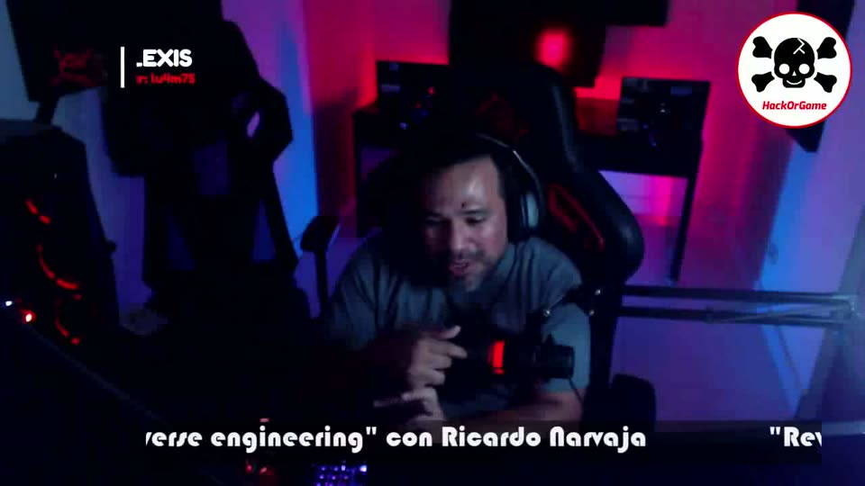
este, lo que vamos a tener, ya, es este, simplemente, una, perdón, un día de Halloween, ya, este, vamos a tener el evento de Panama Hack con 6 charlas, y antes de eso, va a haber también, son talleres completamente gratuitos, todo el evento es completamente gratuito, en el cual, este, va a haber sorteo de acceso vía, por un año, por 6 meses, y no sé por cuánto más, ya, va a estar súper buenos, digamos, nosotros son para el acceso, a lo que es la plataforma de Hub de Box, que, bueno, muchos de los chicos aprenden a través de ello, y entonces, están invitados a este evento, el Panama Hack, que se va a celebrar en el canal, ya, que va a ser, este, transmitido aquí en directo en el canal, las charlas, ya, no el tema de los talleres, eso va a ser detrás del Discord de Panama Hack, ya, están, el Twitter por ahí también, creo que está colgado, ya, voy a, hay un reto hacia el Twitter, voy a indicarles para que ustedes puedan tener más información al respecto, y, y puedan tener este, mayor contacto, voy a leer los mensajes directos que me están enviando, porque hasta que me escriben, y no los leo ahorita, voy a leer, ya chicos, un ratito, solamente quiero hacer el share respectivo, ya, para eventos próximos, que creo que a la final es, como repito, para todos va a ser completamente útil, ya, por ahí que están leyendo, por ahí que estoy leyendo, ya, perfecto, ahí está Najin, fui mencionando, claro, organiza el CTF, ya, ¿quieres que lo dice? ya, voy a organizar el CTF, ya, les prometo que voy a hacer un CTF, ya, este, eh, esto de CTF, va a ser como quien celebra, digamos, el año que tiene este canal, ya, lo voy a hacer, ya, o sea, es una promesa, ya, vamos a ver como vamos con ese tema, ya, este, ¿qué más? a ver, ¿cómo puedo el viernes dar una presentación? Sí, claro, Najin está recontra invitado, ya, hermano, sí, de hecho que sí, si quieres estar acá con nosotros, aquí también vamos a ver también, ya, ahí estoy compartiendo un poco, haciendo un poco pie nada más a lo que se viene, y este, ¿qué más? Ya, eh, nada más chicos, simplemente esperemos ya el capítulo de la viernes, Najin va a estar contando un poco su anécdota que ha tenido, ya, este, que va a ser súper interesante porque es un chico nuevo, y así me gustaría que muchos de ustedes que están ahorita atrás, que, de alguna forma yo creo que el tema de la virtualidad les permite a ustedes también tener, perder un poco ese miedo a transmitir, porque como no es un tema presencial, a veces el tema presencial es mucho más complicado, conozco mucha gente que sabe bastante en diferentes temas, y lamentablemente por un tema muy personal, a veces simplemente no se quieren darles a conocer, ya, entonces lo que yo trato de hacer en estos, en estos días, tanto el día, este, viernes, que es un día comunitario, es un día de hack and beer, digamos de cervezas y hacking, así, no hacemos cosas en conjunto, hackemos más que otras cosas, y también los días, este, sábados, que son tutoriales en sí, ya, invitarlos, así de simple, a que vean conocer un poco lo que conocen, colaborar que crezcan en la comunidad, que es lo más importante, voy a repetir,
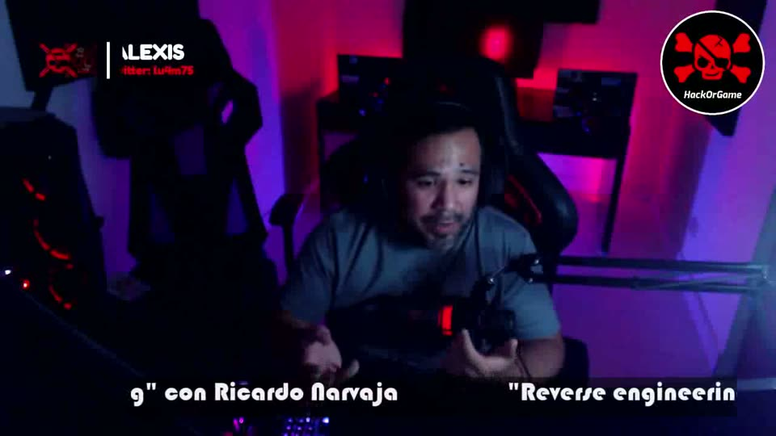
o sea, de esto algunos piensan que, o sea, yo puedo ganar algo en absoluto, no, o sea, tampoco digo que no, de repente después por ahí, no, no sé, no quieran, este, de alguna forma contribuir, o sea, no tengo, tampoco voy a decir que no con respecto a eso, pero, es esto bastante una comunidad en sí, ya crecemos bajo eso, posee perspectiva, y este, y ya va a salir un producto de mente, un artículo también muy interesante, ya, en el cual me han invitado, este, en el cual, este, un poco mención, básicamente, de las personas que han signado parte de esto, y este, contribuyen a este canal, y simplemente, muy agradecidos con todos, gracias por quedarse conmigo, y continuemos creciendo como comunidad, justamente con esos conceptos básicos, que a veces se han perdido en el tiempo, ya, porque, muchas de las cosas se han transformado, muchas cosas se paga, o sea, nunca se ha hecho una comunidad de Joaquín así, ya, es la verdad de las cosas, o sea, no he crecido bajo ese concepto, y yo trato un poco de retribuir lo que yo aprendí también, a base de la comunidad, ya, yo también trato de un modo de reconstruir lo que se ha perdido, en el tiempo, y volver a lo que era antaño, justamente con las comunidades, no, yo no era, no era una a través de Twitch, pues, no, era a través de foros muy particulares, ya, entonces, simplemente chicos invitados, ya, entonces nos vemos el día viernes, a partir de las más o menos 20 horas, ya 20 horas aproximadamente, y el día, bueno, como saben, el día viernes, y el día sábado, como saben, no tenemos tutorial, ahí nos vemos hasta el día miércoles, ya, con nuestra demo, bueno, con lo que es la noche de expertos, a través de un experto, un experto en todo el sentido de la palabra, ya, en el tema de lo que sería forense, ya chicos, entonces me despido, ya, muy bien, relojado, muchas gracias hermano, ya, un junte por el año, ok hermano, si, si, de todas maneras vamos a tener un junte, de repente por el año, una chelita puede ser, de todas maneras, antes de finalizar el año, ya, gracias Nesco, llegué a tus palabras Nesco, ya, le llevé a tus palabras a Ricardo, o sea, cumplí contigo, ya, este, y listo, yo me despido, un abrazo en todo, gracias por estar conmigo, y nos vemos el día viernes, en el día de Hakan Beer, ya, muy bien chicos, un abrazo, y chao, no estamos viendo, cuídense bastante, Gracias.